GENOME EDITING
Rationally engineered Cas9 nucleases with improved specificity
The RNA-guided endonuclease Cas9 is a versatile genome-editing tool with a broad range of applications from therapeutics to functional annotation of genes. Cas9 creates double-strand breaks (DSBs) at targeted genomic loci complementary to a short RNA guide. However, Cas9 can cleave off-target sites that are not fully complementary to the guide, which poses a major challenge for genome editing. Here, we use structure-guided protein engineering to improve the specificity of Streptococcus pyogenes Cas9 (SpCas9). Using targeted deep sequencing and unbiased whole-genome off-target analysis to assess Cas9-mediated DNA cleavage in human cells, we demonstrate that “enhanced specificity” SpCas9 (eSpCas9) variants reduce off-target effects and maintain robust on-target cleavage. Thus, eSpCas9 could be broadly useful for genome-editing applications requiring a high level of specificity.
1Broad Institute of MIT and Harvard, Cambridge, MA 02142, USA. 2McGovern Institute for Brain Research, Massachusetts Institute of Technology, Cambridge, MA 02139, USA. 3Department of Brain and Cognitive Sciences, Massachusetts Institute of Technology, Cambridge, MA 02139, USA. 4Department of Biological Engineering, Massachusetts Institute of Technology, Cambridge, MA 02139, USA. 5Graduate Program in Biophysics, Harvard Medical School, Boston, MA 02115, USA. 6Harvard-MIT Division of Health Sciences and Technology, Harvard Medical School, Boston, MA 02115, USA. *These authors contributed equally to this work. †Corresponding author. E-mail: zhang@broadinstitute.org
The RNA-guided endonuclease Cas9 from microbial clustered regularly interspaced short palindromic repeat (CRISPR)–Cas adaptive immune systems is a powerful tool for genome editing in eukaryotic cells (1, 2). However, the nuclease activity of Cas9 can be triggered even when there is imperfect complementarity between the RNA guide sequence and an off-target genomic site, particularly if mismatches are distal to the protospacer adjacent motif (PAM), a short stretch of nucleotides required for target selection (3, 4). These off-target effects pose a challenge for genome-editing applications. Here, we report the structure-guided engineering of Streptococcus pyogenes Cas9 (SpCas9) to improve its DNA targeting specificity.
Several strategies to enhance Cas9 specificity have been reported, including reducing the amount of active Cas9 in the cell (3, 5, 6), using Cas9 nickase mutants to create a pair of juxtaposed single-stranded DNA nicks (7, 8), truncating the guide sequence at the 5′ end (9), and using a pair of catalytically inactive Cas9 nucleases, each fused to a FokI nuclease domain (10, 11). Although each of these approaches reduces off-target mutagenesis, they have a number of limitations: Reducing the amount of Cas9 can decrease on-target cleavage efficiency, double nicking requires the concurrent delivery of two single-guide RNAs (sgRNAs), and truncated guides can increase indel formation at some off-target loci and reduce the number of target sites in the genome (12, 13).
Figure S1
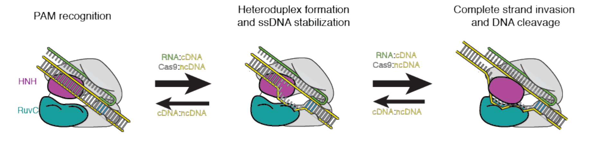
Cas9-mediated DNA cleavage is dependent on DNA strand separation (14, 15). Mismatches between the sgRNA and its DNA target in the first 8 to 12 PAM-proximal nucleotides can eliminate nuclease activity; however, this nuclease activity can be restored by introducing a DNA:DNA mismatch at that location (3, 16–19). We hypothesized that nuclease activity is activated by strand separation and reasoned that by attenuating the helicase activity of Cas9, mismatches between the sgRNA and target DNA are less energetically favorable, resulting in reduced cleavage activity at off-target sites (fig. S1).
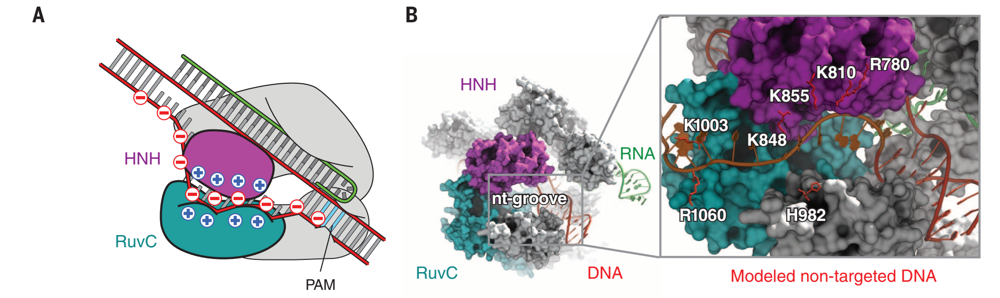
Figure S2
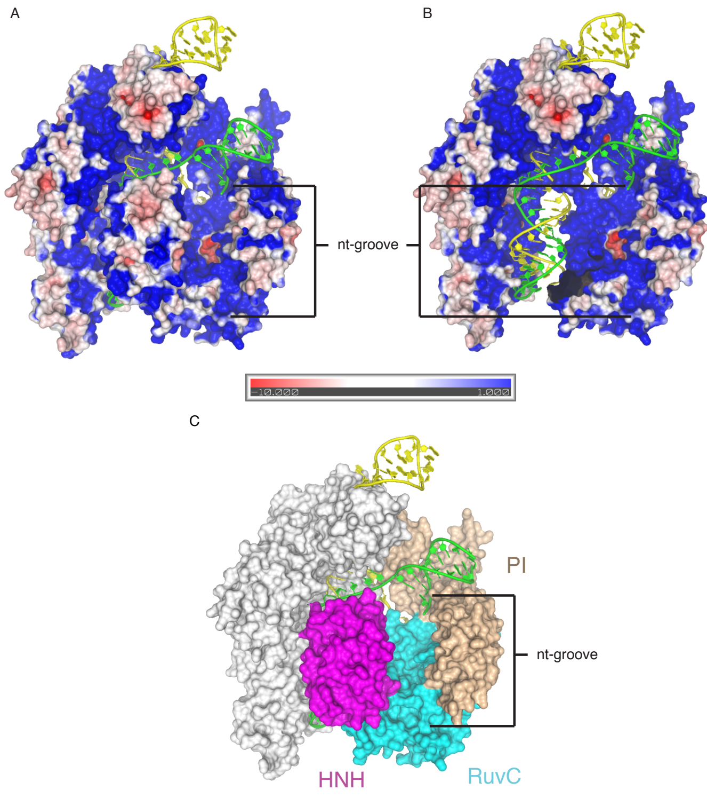
The crystal structure of SpCas9 in complex with guide RNA and target DNA (14, 15) provides a basis to improve specificity through rational engineering. The structure reveals a positively charged groove, positioned between the HNH, RuvC, and PAM-interacting domains in SpCas9, that is likely to be involved in stabilizing the nontarget strand of the target DNA (Fig. 1, A and B, and fig. S2). We hypothesized that neutralization of positively charged residues within this nontarget strand groove (nt-groove) could weaken nontarget strand binding and encourage rehybridization between the target and nontarget DNA strands, thereby requiring more stringent Watson-Crick base pairing between the RNA guide and the target DNA strand.
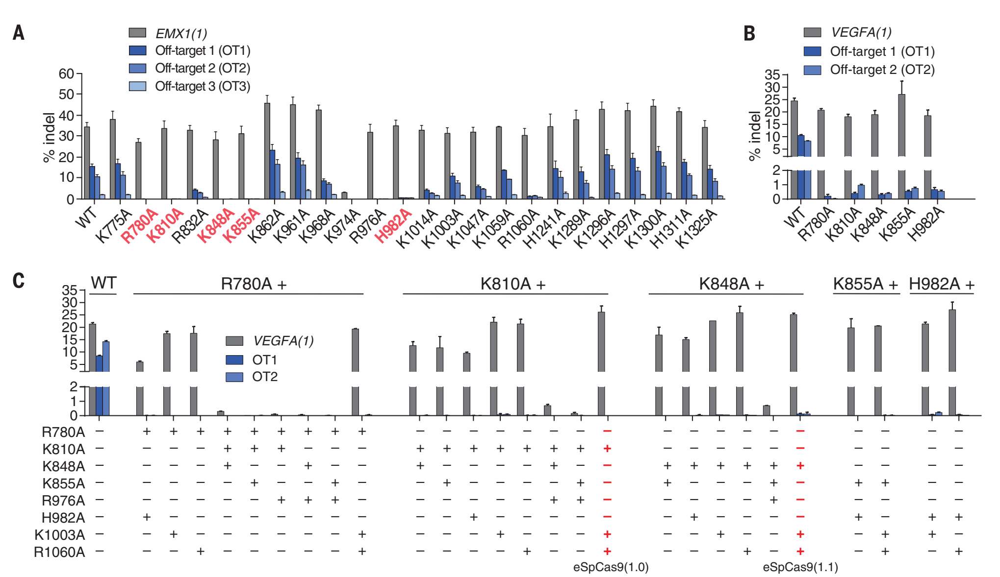
Figure S10
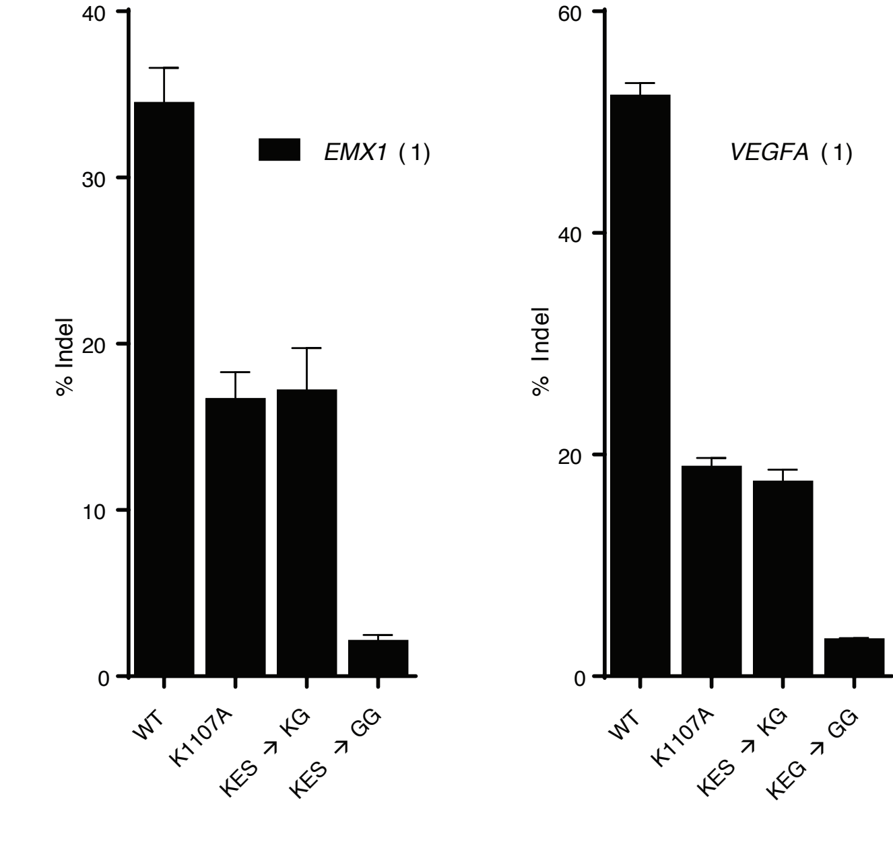
Figure S3
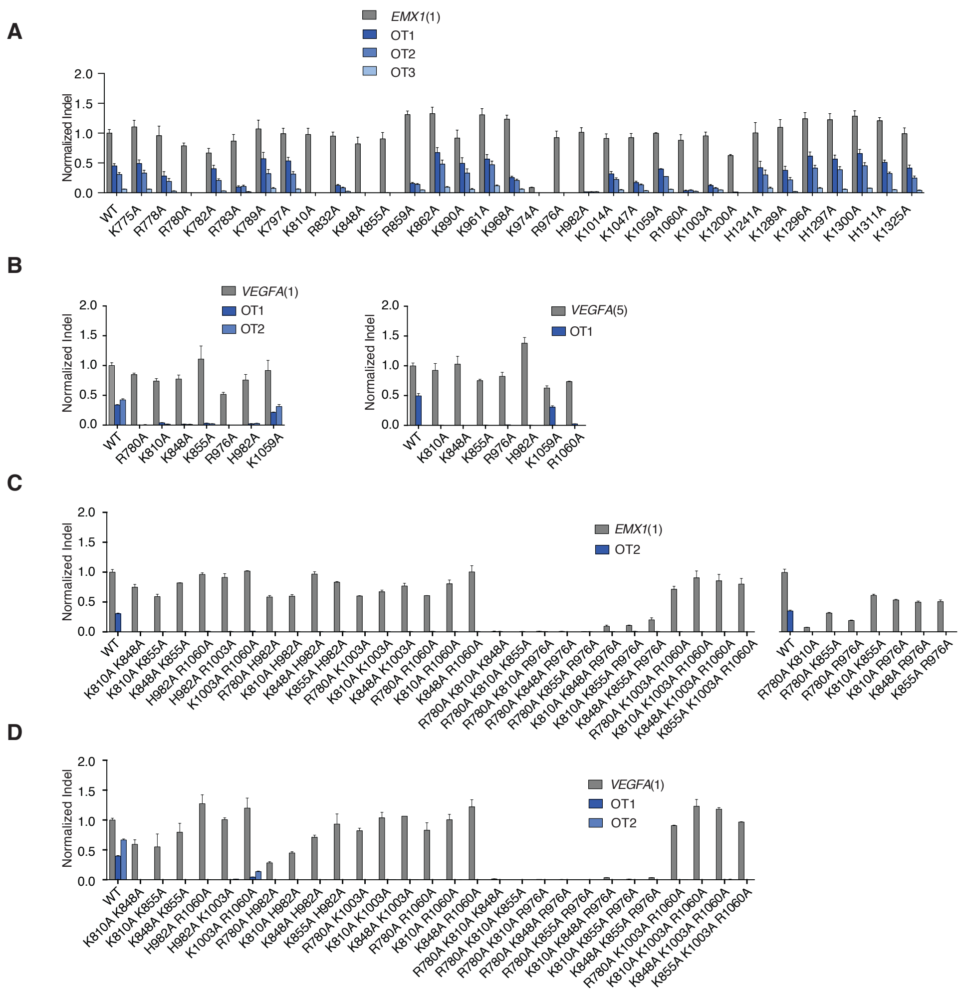
Figure S4
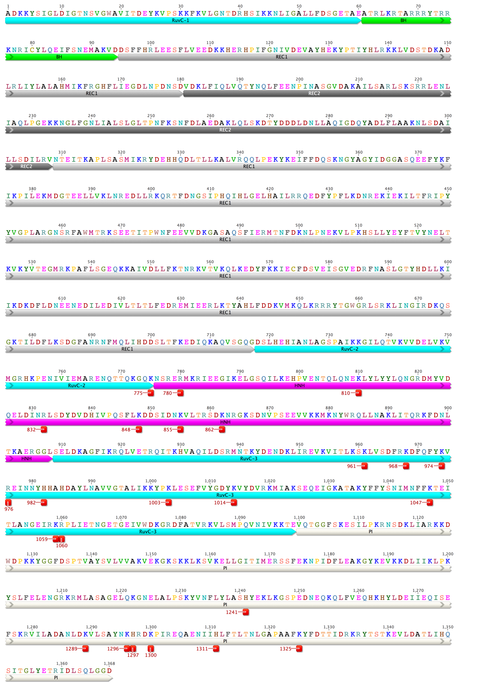
To test this hypothesis, we generated SpCas9 mutants consisting of individual alanine substitutions at 31 positively charged residues within the nt-groove and assessed changes to genome-editing specificity (Fig. 2A; fig. S3, A and B; and fig. S4). Single amino acid mutants were tested for specificity by targeting them to the EMX1(1) target site in human embryonic kidney (HEK) cells using a previously validated guide sequence; indel formation was assessed at the on-target site and three known genomic off-target (OT) sites (3, 4). Five of the 31 single amino acid mutants reduced activity at all three off-target sites by a factor of at least 10 compared with wild-type (WT) SpCas9 while maintaining on-target cleavage efficiency, and six others improved specificity by a factor of 2 to 5. These mutants also exhibited improved specificity when tested on a second locus, VEGFA(1) (Fig. 2B).
Figure S5
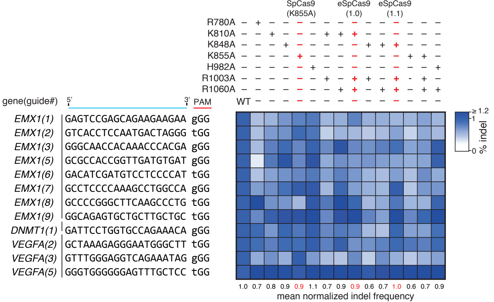
Although some single amino acid mutants were more specific than WT SpCas9 when targeting EMX1(1) and VEGFA(1), off-target indels were still detectable (~0.5%) (Fig. 2B). To further improve specificity, we performed combinatorial mutagenesis using the top single amino acid mutants identified in the initial screen. Eight out of 34 combination mutants retained wild-type on-target activity and displayed undetectable off-target indel levels at EMX1(1) OT1, VEGFA(1) OT1, and VEGFA(1) OT2 (Fig. 2C and fig. S3, C and D). To ensure that the observed decrease in off-target activity was not accompanied by reduced on-target activity, we measured on-target indel formation at 10 target sites in three genomic loci using the top 14 mutants (fig. S5) and ranked these based on a combination of preserved on-target activity and decreased off-target activity. We identified three mutants with both high efficiency (WT levels of on-target indel formation) and specificity SpCas9 (K855A), SpCas9 (K810A/K1003A/R1060A) [also referred to as eSpCas9 (1.0)], and SpCas9 (K848A/K1003A/R1060A) [also referred to as eSpCas9(1.1)]. These three variants were selected for further analysis.
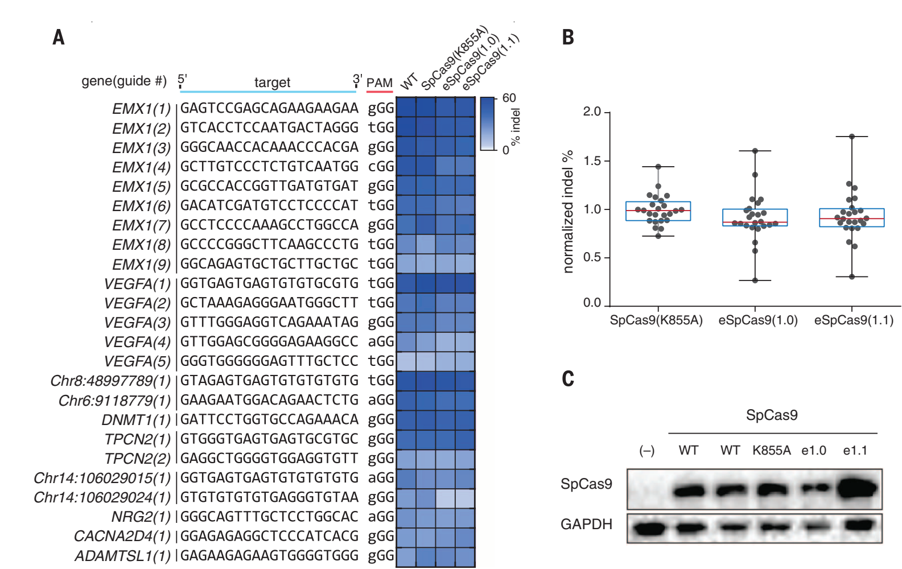
We expanded this assay to assess whether SpCas9(K855A), eSpCas9(1.0), and eSpCas9(1.1) broadly retained efficient nuclease activity, measuring on-target indel generation at 24 target sites spanning 10 genomic loci (Fig. 3A). All three mutants generated similar indel levels as WT SpCas9 with the majority of target sites (Fig. 3B). Mutants were expressed equivalently or at higher levels than WT SpCas9 based on a Western blot (Fig. 3C), indicating that improvements in specificity were not due to decreased protein expression levels.
Figure S6
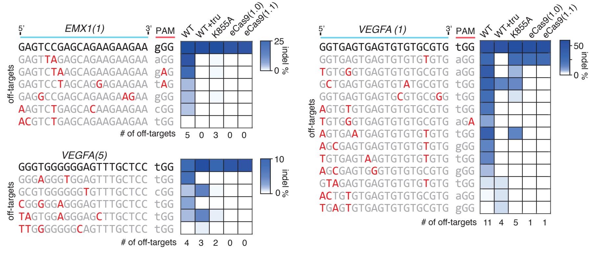
Figure S12
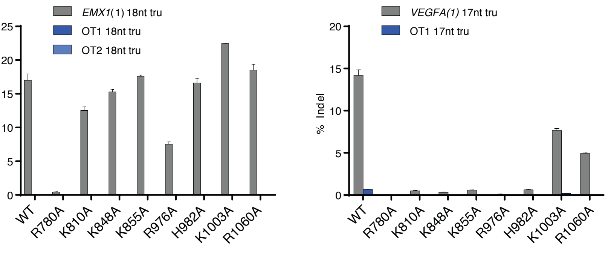
We compared the specificity of the three mutants to WT SpCas9 with truncated guide sequences [18 nucleotides for EMX1(1) and 17 nucleotides for VEGFA(1)], which have been shown to reduce off-target indel formation (12) (fig. S6). When using full-length (20 nucleotides) guides, all three mutants reduced cleavage at all off-target sites assessed compared with WT spCas9. Specifically, eSpCas9(1.0) and eSpCas9(1.1) with 20-nucleotide RNA guides eliminated cleavage at 22 out of 24 off-target sites (<0.2% indel). In contrast, WT SpCas9 with truncated guides eliminated 14 out of 24 sites but also increased off-target activity at five sites compared with WT SpCas9 with 20-nucleotide guides.
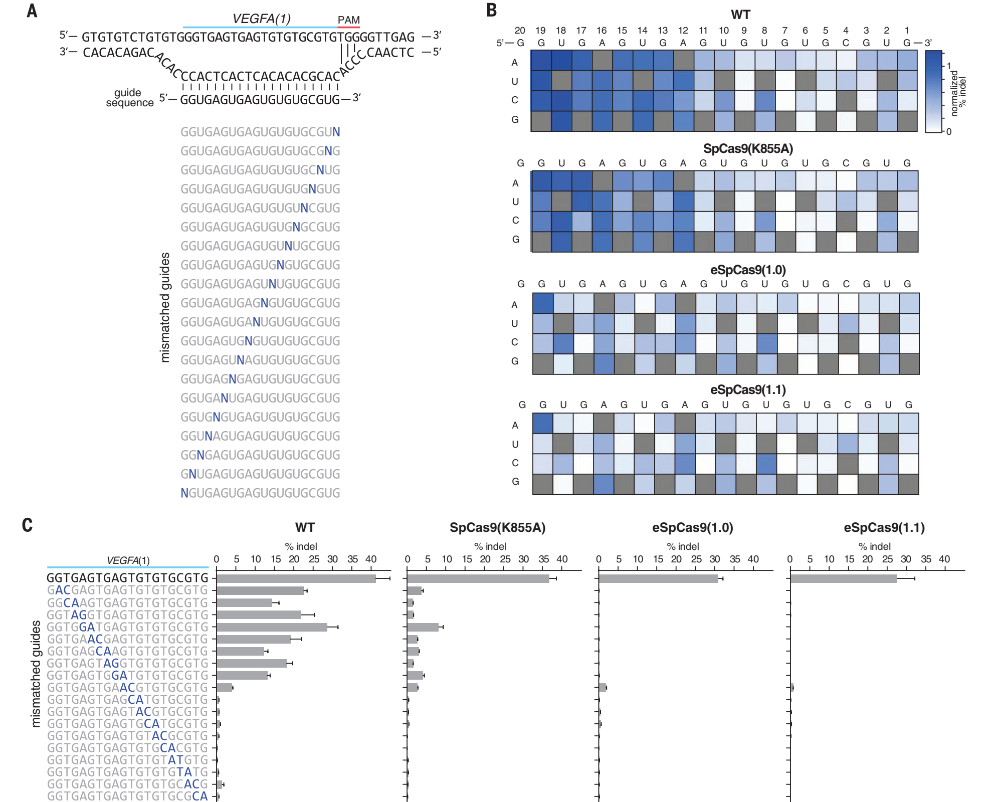
To further understand the tolerance SpCas9 (K855A), eSpCas9(1.0), and eSpCas9(1.1) for mismatched target sites, we systematically mutated the VEGFA(1) guide sequence to introduce single- and double-base mismatches at different positions (Fig. 4, A to C). Compared with WT SpCas9, all three mutants induced lower levels of indels with mismatched guides. Of note, eSpCas9(1.0) and eSpCas9(1.1) induced lower indel levels even with single-base mismatches located outside of the 7- to 12–base pair seed sequence. Given that we did not observe any difference between eSpCas9(1.0) and eSpCas9(1.1) in terms of specificity, we selected SpCas9(K855A) and eSpCas9(1.1) for further analysis based on on-target efficiency.
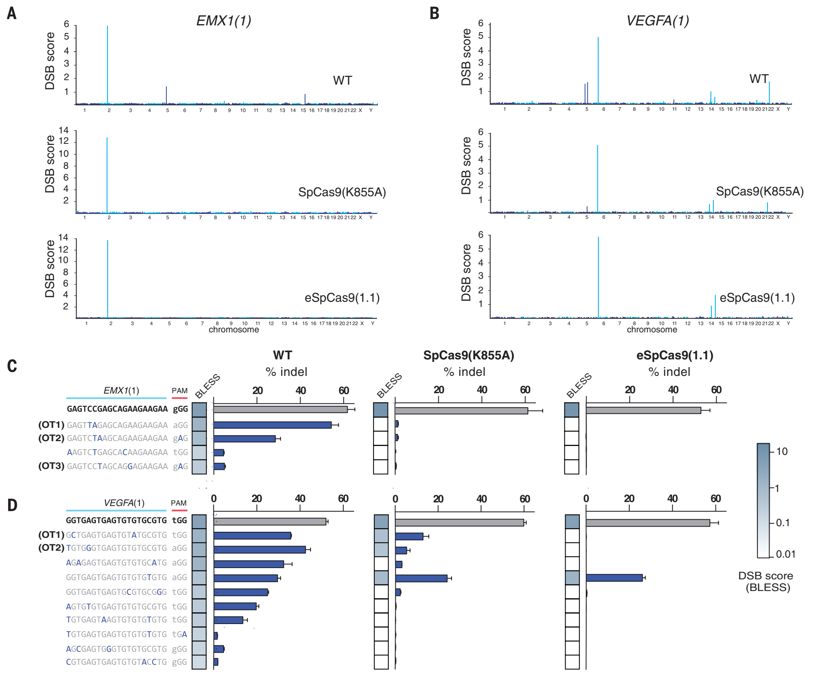
Figure S7
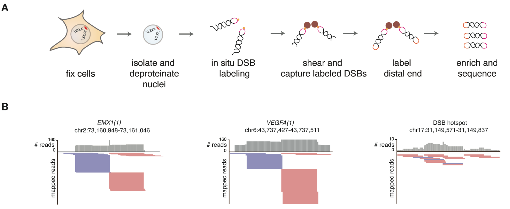
We assessed the genome-wide editing specificity of SpCas9(K855A) and eSpCas9(1.1) using BLESS (direct in situ breaks labeling, enrichment on streptavidin and next-generation sequencing) (20, 21), which quantifies DNA double-stranded breaks (DSBs) across the genome (fig. S7A), for both the EMX1(1) and VEGFA(1) targets for both mutants and compared these results to WT SpCas9. We used a previously established computational pipeline for distinguishing Cas9-induced DSBs from background DSBs (21) (fig. S7B). Both SpCas9 (K855A) and eSpCas9(1.1) exhibited a genome-wide reduction in off-target cleavage and did not generate any new off-target sites (Fig. 5, A to D).
Figure S8
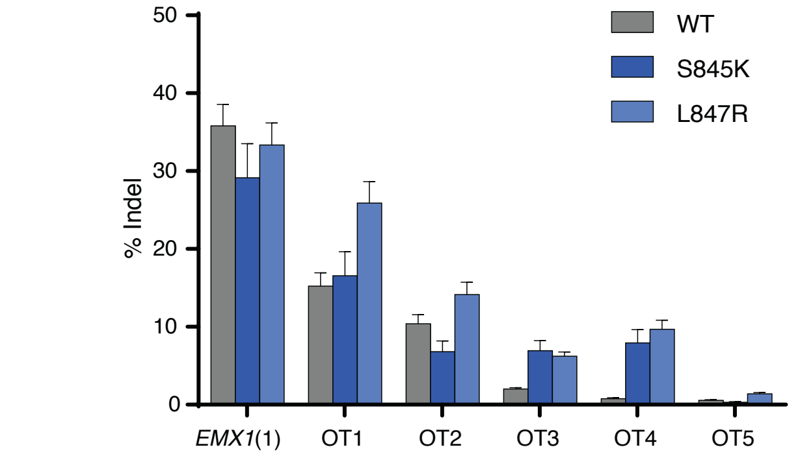
Figure S9
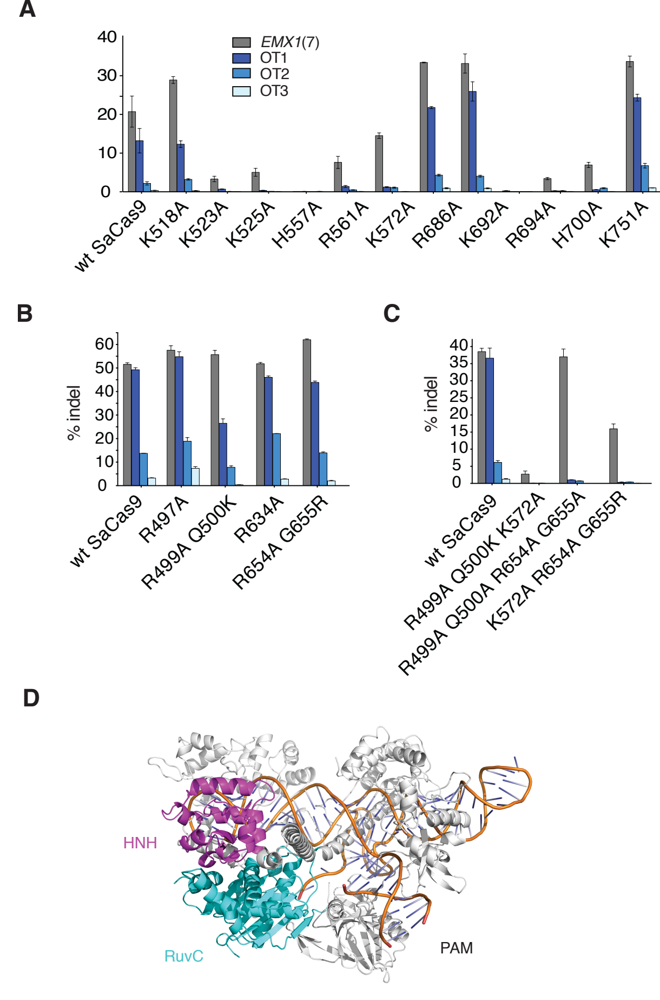
These findings also provide insight into the mechanism of Cas9 targeting and nuclease activity. We propose that off-target cutting occurs when the strength of Cas9 binding to the non-target DNA strand exceeds forces of DNA rehybridization. Consistent with this model, mutations designed to weaken interactions between Cas9 and the noncomplementary DNA (ncDNA) strand led to a substantial improvement in specificity. The model also suggests that, conversely, specificity can be decreased by strengthening the interactions between Cas9 and the nontarget strand. Consistent with this hypothesis, we generated two mutants, S845K and L847R, each of which exhibited decreased specificity (fig. S8). Similar strategies described in this study can also be successfully applied to other Cas9 family proteins, such as Staphylococcus aureus Cas9 (SaCas9) (fig. S9), to engineer nucleases with improved specificity.
We have demonstrated through structure-guided design that neutralization of positive charges in the nt-groove can dramatically decrease off-target indel formation while preserving on-target activity. These data show that eSpCas9(1.1) can be used to increase the specificity of genome-editing applications. Future structure-guided interrogation of Cas9 binding and cleavage mechanism will likely enable further optimization of the CRISPR-Cas9 genome-editing toolbox.
REFERENCES AND NOTES
1. L. Cong et al., Science 339, 819–823 (2013).
2. P. Mali et al., Science 339, 823–826 (2013).
3. P. D. Hsu et al., Nat. Biotechnol. 31, 827–832 (2013).
4. Y. Fu et al., Nat. Biotechnol. 31, 822–826 (2013).
5. B. Zetsche, S. E. Volz, F. Zhang, Nat. Biotechnol. 33, 139–142 (2015).
6. K. M. Davis, V. Pattanayak, D. B. Thompson, J. A. Zuris, D. R. Liu, Nat. Chem. Biol. 11, 316–318 (2015).
7. F. A. Ran et al., Cell 154, 1380–1389 (2013).
8. P. Mali et al., Nat. Biotechnol. 31, 833–838 (2013).
9. Y. Fu, J. D. Sander, D. Reyon, V. M. Cascio, J. K. Joung, Nat. Biotechnol. 32, 279–284 (2014).
10. S. Q. Tsai et al., Nat. Biotechnol. 32, 569–576 (2014).
11. J. P. Guilinger, D. B. Thompson, D. R. Liu, Nat. Biotechnol. 32, 577–582 (2014).
12. Y. Fu, J. D. Sander, D. Reyon, V. M. Cascio, J. K. Joung, Nat. Biotechnol. 32, 279–284 (2014).
13. S. Q. Tsai et al., Nat. Biotechnol. 33, 187–197 (2015).
14. H. Nishimasu et al., Cell 156, 935–949 (2014).
15. C. Anders, O. Niewoehner, A. Duerst, M. Jinek, Nature 513, 569–573 (2014).
16. E. Semenova et al., Proc. Natl. Acad. Sci. U.S.A. 108, 10098–10103 (2011).
17. B. Wiedenheft et al., Proc. Natl. Acad. Sci. U.S.A. 108, 10092–10097 (2011).
18. W. Jiang, D. Bikard, D. Cox, F. Zhang, L. A. Marraffini, Nat. Biotechnol. 31, 233–239 (2013).
19. S. H. Sternberg, S. Redding, M. Jinek, E. C. Greene, J. A. Doudna, Nature 507, 62–67 (2014).
20. N. Crosetto et al., Nat. Methods 10, 361–365 (2013).
21. F. A. Ran et al., Nature 520, 186–191 (2015).
ACKNOWLEDGMENTS
We thank J. Dahlman for helpful discussions and a critical review of the manuscript; F. A. Ran, R. J. Platt, and J. Joung for experimental assistance; and the entire Zhang laboratory for support and advice. I.S. is supported by the Simons Center for the Social Brain. W.X.Y. is supported by T32GM007753 from the National Institute of General Medical Sciences and a Paul and Daisy Soros Fellowship. F.Z. is supported by the National Institutes of Health through NIMH (5DP1-MH100706 and 1R01MH110049) and NIDDK (5R01DK097768-03), a Waterman Award from the National Science Foundation, the Keck, New York Stem Cell, Damon Runyon, Searle Scholars, Merkin, and Vallee Foundations, and B. Metcalfe. F.Z. is a New York Stem Cell Foundation Robertson Investigator. I.S., L.G., B.Z., and F.Z. are inventors on provisional patent application 62/181,453 applied for by the Broad Institute and MIT that covers the engineered CRISPR proteins described in this manuscript. Plasmid DNA encoding eSpCas9(1.0) and eSpCas9(1.1) are available from Addgene under a Universal Biological Material Transfer Agreement with the Broad Institute and MIT. F.Z. is a founder and scientific advisor for Editas Medicine and a scientific advisor for Horizon Discovery. Further information about the protocols, plasmids, and reagents can be found at the Zhang laboratory website (www.genome-engineering.org).
SUPPLEMENTARY MATERIALS
www.sciencemag.org/content/351/6268/84/suppl/DC1 Materials and Methods Figs. S1 to S12 Tables S1 to S3 Supplementary DNA Sequences References
24 September 2015; accepted 18 November 2015 Published online 1 December 2015
www.sciencemag.org/cgi/content/full/science.aad5227/DC1
This PDF file includes: Materials and Methods Figs. S1 to S12 Tables S1 to S3 Supplementary DNA sequences References
SUPPLEMENTARY MATERIALS AND METHODS
Structural analysis
Structures of SpCas9 (PDB ID 4UN3 and 4OO8) were analyzed using Pymol (Schrödinger). DNA was hand modeled into the non-complementary strand groove (nt-groove) with the phosphate backbone making hydrogen bond distance contacts with specificity conferring mutations when possible. Electrostatics were calculated using the APBS plugin as part of Pymol. Amino acid sequences were visualized using Geneious 2 (Geneious version (8.0.3) (www.geneious.com(1)).
Cloning
Table S1
Table S1. Golden Gate primers for mutant generation.
| SpCas9 primer Name | Sequence |
|---|---|
| SPCAS9-N | ATGGTCTCACCGGTGCCACCATGGACTATAAG |
| K775A_F | ATGGTCTCAGGCGAACAGCCGCGAGAGAATGAAGCGGAT |
| R780A_F | ATGGTCTCAGGCGATGAAGCGGATCGAAGAGGGCATCA |
| Q807A_F | ATGGTCTCAGGCGAACGAGAAGCTGTACCTGTACTACCTG |
| K810A_F | ATGGTCTCAGGCGCTGTACCTGTACTACCTGCAGAATGG |
| R832A_F | ATGGTCTCAGCCCTGTCCGACTACGATGTGGACCATATC |
| K848A_F | ATGGTCTCAGCCGACGACTCCATCGACAACAAGGTGCTGACC |
| K855A_F | ATGGTCTCAGCAGTGCTGACCAGAAGCGACAAGAACCGGG |
| R859_F | ATGGTCTCACGCAAGCGACAAGAACCGGGGCAAGAG |
| K862_F | ATGGTCTCACGCGAACCGGGGCAAGAGCGACAAC |
| K866_F | ATGGTCTCACGCGAGCGACAACGTGCCCTCCGAA |
| K961_F | ATGGTCTCAGCGCTGGTGTCCGATTTCCGGAAGGATTTC |
| K968A_F | ATGGTCTCAGCGGATTTCCAGTTTTACAAAGTGCGCGAGATCAACAAC |
| K974A_F | ATGGTCTCACGCAGTGCGCGAGATCAACAACTACCACCA |
| R976A_F | ATGGTCTCATGGCCGAGATCAACAACTACCACCACGCC |
| H982A_F | ATGGTCTCACGCCCACGCCCACGACGCCTAC |
| H983A_F | ATGGTCTCACGCCGCCCACGACGCCTACCTGAA |
| K1014A_F | ATGGTCTCAGCGGTGTACGACGTGCGGAAGATGATCG |
| K1047A_F | ATGGTCTCACGCGACCGAGATTACCCTGGCCAACG |
| K1059A_F | ATGGTCTCAGCGCGGCCTCTGATCGAGACAAACGG |
| R1060A_F | ATGGTCTCAGGCGCCTCTGATCGAGACAAACGGCG |
| K1003A_F | ATGGTCTCAGCGCTGGAAAGCGAGTTCGTGTACGGC |
| H1240A_F | ATGGTCTCACGCCTATGAGAAGCTGAAGGGCTCCCC |
| K1244A_F | ATGGTCTCAGGCGCTGAAGGGCTCCCCCGAG |
| K1289A_F | ATGGTCTCACGCAGTGCTGTCCGCCTACAACAAGCAC |
| K1296A_F | ATGGTCTCACGCGCACCGGGATAAGCCCATCAGAG |
| H1297A_F | ATGGTCTCAAGGCCCGGGATAAGCCCATCAGAGAGC |
| R1298A_F | ATGGTCTCAGCGGATAAGCCCATCAGAGAGCAGGCC |
| K1300A_F | ATGGTCTCAGCGCCCATCAGAGAGCAGGCCGAG |
| R1303A_F | ATGGTCTCACGCAGAGCAGGCCGAGAATATCATCCACC |
| H1311A_F | ATGGTCTCACGCCCTGTTTACCCTGACCAATCTGGGAG |
| K1325A_F | ATGGTCTCACGCGTACTTTGACACCACCATCGACCGG |
| K1107A_F | ATGGTCTCACGCCGAGTCTATCCTGCCCAAGAGGAACAG |
| E1108A_F | ATGGTCTCAAGCCTCTATCCTGCCCAAGAGGAACAGCGA |
| S1109A_F | ATGGTCTCAGGCCATCCTGCCCAAGAGGAACAGCGATAA |
| ΔK1107_F | ATGGTCTCACGAGTCTATCCTGCCCAAGAGGAACAGCGA |
| ΔE1108_F | ATGGTCTCAATCTATCCTGCCCAAGAGGAACAGCGATAA |
| ΔS1109_F | ATGGTCTCAGATCCTGCCCAAGAGGAACAGCGATAAGCT |
| KES_KG_F | ATGGTCTCAAGGCATCCTGCCCAAGAGGAACAGCGATAA |
| KES_GG_F | ATGGTCTCACGGCATCCTGCCCAAGAGGAACAGCGATAA |
| R778A_F | ATGGTCTCACGCCGAGAGAATGAAGCGGATCGAAGAGGG |
| K782A_F | ATGGTCTCAGGCCCGGATCGAAGAGGGCATCAAAGAGCT |
| R783A_F | ATGGTCTCAGGCCATCGAAGAGGGCATCAAAGAGCTGGG |
| K789A_F | ATGGTCTCACGCCGAGCTGGGCAGCCAGATCCTGAAAGA |
| K797A_F | ATGGTCTCAGGCCGAACACCCCGTGGAAAACACCCAGCT |
| K890A_F | ATGGTCTCACGCCCTGATTACCCAGAGAAAGTTCGACAA |
| R1114A_F | ATGGTCTCAGGCCAACAGCGATAAGCTGATCGCCAGAAA |
| K1118A_F | ATGGTCTCATGCCCTGATCGCCAGAAAGAAGGACTGGGA |
| K1200A_F | ATGGTCTCATGCCTACTCCCTGTTCGAGCTGGAAAACGG |
| R63A_F | ATGGTCTCACGCCCTGAAGAGAACCGCCAGAAGAAGATA |
| K163A_F | ATGGTCTCACGCCTTCCGGGGCCACTTCCTGATCGAGGG |
| R165A_F | ATGGTCTCACGCCGGCCACTTCCTGATCGAGGGCGACCT |
| R403A_F | ATGGTCTCAGGCCACCTTCGACAACGGCAGCATCCCCCA |
| H415A_F | ATGGTCTCACGCCCTGGGAGAGCTGCACGCCATTCTGCG |
| R447A_F | ATGGTCTCACGCCATCCCCTACTACGTGGGCCCTCTGGC |
| K1000A_F | ATGGTCTCAAGCCTACCCTAAGCTGGAAAGCGAGTTCGT |
| SPCAS9-C | ATGGTCTCAAATTCTTACTTTTTCTTTTTTGCCTGGCC |
| K775A_R | ATGGTCTCACGCCTGTCCCTTCTGGGTGGTCTGG |
| R780A_R | ATGGTCTCACGCCTCGCGGCTGTTCTTCTGTCCCT |
| Q807A_R | ATGGTCTCACGCCAGCTGGGTGTTTTCCACGGGG |
| K810A_R | ATGGTCTCACGCCTCGTTCTGCAGCTGGGTGTTTTCCA |
| R832A_R | ATGGTCTCAGGGCGTTGATGTCCAGTTCCTGGTCCAC |
| K848A_R | ATGGTCTCACGGCCAGAAAGCTCTGAGGCACGATATGGTCCAC |
| K855A_R | ATGGTCTCACTGCGTTGTCGATGGAGTCGTCCTTCAGAAAGCTCTG |
| R859_R | ATGGTCTCATGCGGTCAGCACCTTGTTGTCGATGGAGTC |
| K862_R | ATGGTCTCACGCGTCGCTTCTGGTCAGCACCTTGTTG |
| K866_R | ATGGTCTCACGCGCCCCGGTTCTTGTCGCTTCTG |
| K961_R | ATGGTCTCAGCGCGGACTTCAGGGTGATCACTTTCACTTC |
| K968A_R | ATGGTCTCACCGCCCGGAAATCGGACACCAGCTTG |
| K974A_R | ATGGTCTCATGCGTAAAACTGGAAATCCTTCCGGAAATCGGACAC |
| R976A_R | ATGGTCTCAGCCACTTTGTAAAACTGGAAATCCTTCCGGAAATCGG |
| H982A_R | ATGGTCTCAGGCGTAGTTGTTGATCTCGCGCACTTTGTAAAACTG |
| H983A_R | ATGGTCTCAGGCGTGGTAGTTGTTGATCTCGCGCACTTTG |
| K1014A_R | ATGGTCTCACCGCGTAGTCGCCGTACACGAACTCG |
| K1047A_R | ATGGTCTCACGCGAAAAAGTTCATGATGTTGCTGTAGAAGAAGTACTTGG |
| K1059A_R | ATGGTCTCAGCGCCCGGATCTCGCCGTTGGC |
| R1060A_R | ATGGTCTCACGCCTTCCGGATCTCGCCGTTGGC |
| K1003A_R | ATGGTCTCAGCGCAGGGTACTTTTTGATCAGGGCGGTTC |
| H1240A_R | ATGGTCTCAGGCGCTGGCCAGGTACAGGAAGTTCAC |
| K1244A_R | ATGGTCTCACGCCTCATAGTGGCTGGCCAGGTACAG |
| K1289A_R | ATGGTCTCATGCGTCCAGATTAGCGTCGGCCAGGATC |
| K1296A_R | ATGGTCTCACGCGTTGTAGGCGGACAGCACTTTGTCC |
| H1297A_R | ATGGTCTCAGCCTTGTTGTAGGCGGACAGCACTTTGTCC |
| R1298A_R | ATGGTCTCACCGCGTGCTTGTTGTAGGCGGACAGC |
| K1300A_R | ATGGTCTCAGCGCATCCCGGTGCTTGTTGTAGGCG |
| R1303A_R | ATGGTCTCATGCGATGGGCTTATCCCGGTGCTTGTTGTAG |
| H1311A_R | ATGGTCTCAGGCGATGATATTCTCGGCCTGCTCTCTGATG |
| K1325A_R | ATGGTCTCACGCGAAGGCGGCAGGGGCTCC |
| K1107A_R | ATGGTCTCAGGCGCTGAAGCCGCCTGTCTGCACCTCGGT |
| E1108A_R | ATGGTCTCAGGCTTTGCTGAAGCCGCCTGTCTGCACCTC |
| S1109A_R | ATGGTCTCAGGCCTCTTTGCTGAAGCCGCCTGTCTGCAC |
| ΔK1107_R | ATGGTCTCACTCGCTGAAGCCGCCTGTCTGCACCTCGGT |
| ΔE1108_R | ATGGTCTCAAGATTTGCTGAAGCCGCCTGTCTGCACCTC |
| ΔS1109_R | ATGGTCTCAGATCTCTTTGCTGAAGCCGCCTGTCTGCAC |
| KES_KG_R | ATGGTCTCAGCCTTTGCTGAAGCCGCCTGTCTGCACCTC |
| KES_GG_R | ATGGTCTCAGCCGCCGCTGAAGCCGCCTGTCTGCACCTC |
| R778A_R | ATGGTCTCAGGCGCTGTTCTTCTGTCCCTTCTGGGTGGT |
| K782A_R | ATGGTCTCAGGCCATTCTCTCGCGGCTGTTCTTCTGTCC |
| R783A_R | ATGGTCTCAGGCCTTCATTCTCTCGCGGCTGTTCTTCTG |
| K789A_R | ATGGTCTCAGGCGATGCCCTCTTCGATCCGCTTCATTCT |
| K797A_R | ATGGTCTCAGGCCAGGATCTGGCTGCCCAGCTCTTTGAT |
| K890A_R | ATGGTCTCAGGCGGCGTTCAGCAGCTGCCGCCAGTAGTT |
| R1114A_R | ATGGTCTCAGGCCTTGGGCAGGATAGACTCTTTGCTGAA |
| K1118A_R | ATGGTCTCAGGCATCGCTGTTCCTCTTGGGCAGGATAGA |
| K1200A_R | ATGGTCTCAGGCAGGCAGCTTGATGATCAGGTCCTTTTT |
| R63A_R | ATGGTCTCAGGCGGTGGCCTCGGCTGTTTCGCCGCTGTC |
| K163A_R | ATGGTCTCAGGCGATCATGTGGGCCAGGGCCAGATAGAT |
| R165A_R | ATGGTCTCAGGCGAACTTGATCATGTGGGCCAGGGCCAG |
| R403A_R | ATGGTCTCAGGCCTGCTTCCGCAGCAGGTCCTCTCTGTT |
| H415A_R | ATGGTCTCAGGCGATCTGGTGGGGGATGCTGCCGTTGTC |
| R447A_R | ATGGTCTCAGGCGAAGGTCAGGATCTTCTCGATCTTTTC |
| K1000A_R | ATGGTCTCAGGCTTTGATCAGGGCGGTTCCCACGACGGC |
| SaCas9 primer name | Sequence |
| SACAS9-N | ATGAAGACTACCGGTGCCACCATGGCCC |
| K518A_F | ATGAAGACTAGCGTACCTGATCGAGAAGATCAAGCTGCA |
| K523A_F | ATGAAGACTAGCGATCAAGCTGCACGACATGCAGGA |
| K525A_F | ATGAAGACTAGCGCTGCACGACATGCAGGAAGGC |
| H557A_F | ATGAAGACTAGCCATCATCCCCAGAAGCGTGTCCTTC |
| R561A_F | ATGAAGACTAGCAAGCGTGTCCTTCGACAACAGCTTC |
| K572A_F | ATGAAGACTAGCGGTGCTCGTGAAGCAGGAAGAAAACA |
| R686A_F | ATGAAGACTAGCGAAGTGGAAGTTTAAGAAAGAGCGGAACAA |
| K692A_F | ATGAAGACTAGCAGAGCGGAACAAGGGGTACAAGCAC |
| R694A_F | ATGAAGACTAGCGAACAAGGGGTACAAGCACCACGC |
| H700A_F | ATGAAGACTAGCCCACGCCGAGGACGCCCTGA |
| K751A_F | ATGAAGACTAGCAGAGATCTTCATCACCCCCCACCAG |
| R497A_F | ATGAAGACTAGCCAACCGGCAGACCAACGAGCG |
| R499A;Q500K_F | ATGAAGACTAGCAAAGACCAACGAGCGGATCGAGG |
| R634A_F | ATGAAGACTAGCGTTCTCCGTGCAGAAAGACTTCATCAAC |
| R654A;G655R_F | ATGAAGACTAGCCCGCCTGATGAACCTGCTGCGG |
| SACAS9-C | ATGAAGACTAAATTCTTAAGCGTAATCTGGAACATCGTATGG |
| K518A_R | ATGAAGACTAACGCGGCGTTCTCTTTGCCGGTGG |
| K523A_R | ATGAAGACTATCGCCTCGATCAGGTACTTGGCGTTCTCTT |
| K525A_R | ATGAAGACTAGCGCGATCTTCTCGATCAGGTACTTGGCGT |
| H557A_R | ATGAAGACTATGGCGTCCACCTCATAGTTGAAGGGGTTGT |
| R561A_R | ATGAAGACTATTGCGGGGATGATGTGGTCCACCTCATA |
| K572A_R | ATGAAGACTACCGCGTTGTTGAAGCTGTTGTCGAAGGACA |
| R686A_R | ATGAAGACTATCGCCCGCAGAAAGCTGGTGAAGCC |
| K692A_R | ATGAAGACTACTGCCTTAAACTTCCACTTCCGCCGCA |
| R694A_R | ATGAAGACTATCGCCTCTTTCTTAAACTTCCACTTCCGCC |
| H700A_R | ATGAAGACTAGGGCCTTGTACCCCTTGTTCCGCTCTTTC |
| K751A_R | ATGAAGACTACTGCGTACTCCTGCTCGGTTTCGATCTCG |
| R497A_R | ATGAAGACTATGGCCTTCTGCATCTCGTTGATCATTTTCTG |
| R499A;Q500K_R | ATGAAGACTATTGCGTTCCGCTTCTGCATCTCGTTGA |
| R634A_R | ATGAAGACTAACGCGTTGATGTCCCGTTCTTCCAGCA |
| R654A;G655R_R | ATGAAGACTAGGGCGGTGGCGTATCTGGTATCCACCA |
Mutants were cloned using the Golden Gate strategy (2). Briefly, wild-type SpCas9 (pX330) or wild-type SaCas9 (pX601) were used as template to amplify two PCR fragments, using primers that incorporated BsaI (pX330) or BbsI (pX601) restriction sites. BsaI or BbsI digestion results in distinct 5’ overhangs which are either compatible to the AgeI or EcoRI overhangs of the recipient vector or will reconstitute the desired point mutation at the junction of the two Cas9 DNA pieces.
Cell culture and transfections
Figure S11
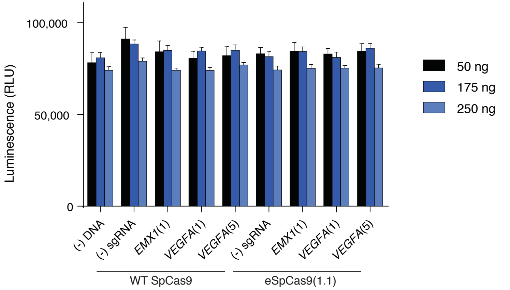
Human embryonic kidney (HEK) cell lines 293T and 293FT (Fisher Scientific) were maintained in Dulbecco’s modified Eagle’s medium DMEM (Life technologies) supplemented with 10% fetal bovine serum (Gibco) at 37°C with 5% CO2. Cells were plated one day prior to transfection in 24- or 96-well plates (Corning) at a density of approximately 120,000 cells per 24-well or 30,000 cells per 96-well. Transfections were performed with Lipofectamine 2000 (Life Technologies) according to the manufacturer's recommended protocol. For initial screening of Cas9 mutants, 1000ng Cas9 plasmid and 450ng of sgRNA plasmid were transfected per 24-well. Unless otherwise specified, subsequent transfections were performed with a total of 400ng of Cas9 plasmid with 100-200ng sgRNA plasmid per 24-well, or 100ng Cas9 with 25-50ng sgRNA plasmid per 96-well. For each transfection, an equal amount of plasmid was delivered to all samples. For cytotoxicity experiments, HEK293T cells were transfected with WT or eSpCas9(1.1) and incubated for 72 hours before measuring cell survival using the CellTiter-Glo (Promega) viability assay which fluoresces in response ATP production by live cells.
Indel analysis by next-generation sequencing (NGS)
Table S2
Table S2. Guide sequences and NGS primers
| 5' Sequence 3' | PAM | Forward Primer | Reverse Primer |
|---|---|---|---|
| G G T G A G T G A G T G T G T G C G T G | N G G | CCATCTCATCCCTGCGTGTCTCcGCGTCTTCGAGAGTGAGGAC | CCTCTCTATGGGCAGTCGGTGATgGGGGAGAGGGACACACAGAT |
| G G T G A G T G A G T G T G T G T G T G | N G G | CCATCTCATCCCTGCGTGTCTCcAGGGACCCCTCTGACAGACT | CCTCTCTATGGGCAGTCGGTGATgCACACCCACACCCTCATACA |
| G C T G A G T G A G T G T A T G C G T G | N G G | CCATCTCATCCCTGCGTGTCTCcGCCCATTTCTCCTTTGAGGT | CCTCTCTATGGGCAGTCGGTGATgAGCCACAGAGGTGGAGACTG |
| G G T G A G T G A G T G C G T G C G G G | N G G | CCATCTCATCCCTGCGTGTCTCcCCTCCCACAGGAATTTGAAG | CCTCTCTATGGGCAGTCGGTGATgGCACCCCAACACCTACATCT |
| T G T G G G T G A G T G T G T G C G T G | N G G | CCATCTCATCCCTGCGTGTCTCcTGTCACCACACAGTTACCACCT | CCTCTCTATGGGCAGTCGGTGATgGGGAATCTAATGTATGGCATGG |
| A G T G A A T G A G T G T G T G T G T G | N G G | CCATCTCATCCCTGCGTGTCTCcATAAGGGGCAAGTTCTGGGCTAT | CCTCTCTATGGGCAGTCGGTGATgTGTGACCCAAAAGATTCCCACC |
| T G T G A G T A A G T G T G T G T G T G | N G G | CCATCTCATCCCTGCGTGTCTCcTGATGAAGCTGCCTTTCCTAAGC | CCTCTCTATGGGCAGTCGGTGATgCACAGGCACTAACTTCTTCAGCCTA |
| A C T G T G T G A G T G T G T G C G T G | N G G | CCATCTCATCCCTGCGTGTCTCcTCTGCCAGATCCTTAGGCG | CCTCTCTATGGGCAGTCGGTGATgCCCCAGCAAAACGCACTG |
| A G C G A G T G G G T G T G T G C G T G | N G G | CCATCTCATCCCTGCGTGTCTCcGACGTCTGGGTCCCGAGC | CCTCTCTATGGGCAGTCGGTGATgCCACACACAGCGTCTTCCG |
| A G T G T G T G A G T G T G T G C G T G | N G G | CCATCTCATCCCTGCGTGTCTCcTCCTGTGGAACAACCAGACACC | CCTCTCTATGGGCAGTCGGTGATgTCAAAGCTGTATCCCCATTGCCTA |
| T G T G G G T G A G T G T G T G C G T G | N G A | CCATCTCATCCCTGCGTGTCTCcAAGCTGCTGGCTTTCCTAAG | CCTCTCTATGGGCAGTCGGTGATgAGCAACGAGACGTTAACCC |
| A G C G A G T G A G T G T G T G T G T G | N G G | CCATCTCATCCCTGCGTGTCTCcAGGACCCAGGTTTGCACT | CCTCTCTATGGGCAGTCGGTGATgTTCTGCCACTGGCTTAGCTT |
| G T A G A G T G A G T G T G T G T G T G | N G G | CCATCTCATCCCTGCGTGTCTCcATGATTAGAAACCTGCACTCCCAG | CCTCTCTATGGGCAGTCGGTGATgGTAAGTGAATCTCTGTCTGTCTCAT |
| T G A G T G T G A G T G T G T G C G T G | N G G | CCATCTCATCCCTGCGTGTCTCcGTGGGCACCAGGAGCGTAG | CCTCTCTATGGGCAGTCGGTGATgCAGGAGGTTAAATCCCTCCTCCA |
| A G A G A G T G A G T G T G T G C A T G | N G G | CCATCTCATCCCTGCGTGTCTCcGGCCTCGGGAAACTTACAAT | CCTCTCTATGGGCAGTCGGTGATgGTTTCCCCCATGCTTTTCTT |
| G T T G A G T G A A T G T G T G C G T G | N G G | CCATCTCATCCCTGCGTGTCTCcAGTGCCTTGCACAAATAGGC | CCTCTCTATGGGCAGTCGGTGATgGAAGGGTTGGTTTGGAAG |
| C G T G A G T G A G T G T G T A C C T G | N G G | CCATCTCATCCCTGCGTGTCTCcCTGCCATTGTGAACAGTGCT | CCTCTCTATGGGCAGTCGGTGATgAGGCATGAGCCACTGAGACT |
| G G G T G G G G G G A G T T T G C T C C | N G G | CCATCTCATCCCTGCGTGTCTCcAAGCAACTCCAGTCCCAAAT | CCTCTCTATGGGCAGTCGGTGATgCCCTAGTGACTGCCGTCTG |
| G G G A G G G T G G A G T T T G C T C C | N G G | CCATCTCATCCCTGCGTGTCTCcCCTGCAGGTGTCTCCTTTTC | CCTCTCTATGGGCAGTCGGTGATgGCCACAGTCGTGTCATCTTG |
| C G G G G G A G G G A G T T T G C T C C | N G G | CCATCTCATCCCTGCGTGTCTCcACTTCTTGGGCAGTGATGGA | CCTCTCTATGGGCAGTCGGTGATgTACAAGGTGAGCCTGGGTCT |
| T A G T G G A G G G A G C T T G C T C C | N G G | CCATCTCATCCCTGCGTGTCTCcTGCAAAGCTAAGCAGAGATGC | CCTCTCTATGGGCAGTCGGTGATgGAAAGAAAGCCCCACCCTCG |
| G C G T G G G G G G T G T T T G C T C C | N G G | CCATCTCATCCCTGCGTGTCTCcGCAGAGATGCCTATGCCTACAT | CCTCTCTATGGGCAGTCGGTGATgCACCCTCGCTCTTTTAGTCTC |
| T T G G G G G G G C A G T T T G C T C C | N G G | CCATCTCATCCCTGCGTGTCTCcACATGCGATTCTGCAGGGAA | CCTCTCTATGGGCAGTCGGTGATgTCAGAGGGTGCTGTCTGTCT |
| G A G T C C G A G C A G A A G A A G A A | N G G | CCATCTCATCCCTGCGTGTCTCcCAAAGTACAAACGGCAGAAGC | CCTCTCTATGGGCAGTCGGTGATgGTTGCCCACCCTAGTCATTG |
| G A G T T A G A G C A G A A G A A G A A | N G G | CCATCTCATCCCTGCGTGTCTCcTTCTGAGGGCTGCTACCTGT | CCTCTCTATGGGCAGTCGGTGATgGCCCAATCATTGATGCTTTT |
| G A G T C T A A G C A G A A G A A G A A | N A G | CCATCTCATCCCTGCGTGTCTCcCACGGCCTTTGCAAATAGAG | CCTCTCTATGGGCAGTCGGTGATgGGCTTTCACAAGGATGCAGT |
| G A G G C C G A G C A G A A G A A A G A | N G G | CCATCTCATCCCTGCGTGTCTCcTGGGAGAGAGACCCCTTCTT | CCTCTCTATGGGCAGTCGGTGATgTCCTGCTCTCACTTAGACTTTCTC |
| A A G T C T G A G C A C A A G A A G A A | N G G | CCATCTCATCCCTGCGTGTCTCcGTTCTGACATTCCTCCTGAGGGA | CCTCTCTATGGGCAGTCGGTGATgATGGCTTACATATTTATTAGATAAAATGTATTCC |
| G A G T C C T A G C A G G A G A A G A A | N A G | CCATCTCATCCCTGCGTGTCTCcCCAGACTCAGTAAAGCCTGGA | CCTCTCTATGGGCAGTCGGTGATgTGGCCCCAGTCTCTCTTCTA |
| A C G T C T G A G C A G A A G A A G A A | N G G | CCATCTCATCCCTGCGTGTCTCcGGCCCTTCCTCTGTACTCTATAC | CCTCTCTATGGGCAGTCGGTGATgTGCCAGTGCCTCAAGAATGTC |
| G T C A C C T C C A A T G A C T A G G G | N G G | CCATCTCATCCCTGCGTGTCTCcCCAATGGGGAGGACATCGAT | CCTCTCTATGGGCAGTCGGTGATgTCCAGCTTGGGCCCAC |
| G G G C A A C C A C A A A C C C A C G A | N G G | CCATCTCATCCCTGCGTGTCTCcCCAATGGGGAGGACATCGAT | CCTCTCTATGGGCAGTCGGTGATgTCCAGCTTGGGCCCAC |
| G C T T G T C C C T C T G T C A A T G G | N G G | CCATCTCATCCCTGCGTGTCTCcAACCCACGAGGGCAGAGT | CCTCTCTATGGGCAGTCGGTGATgGAGGAGAAGGCCAAGTGGTC |
| G C G C C A C C G G T T G A T G T G A T | N G G | CCATCTCATCCCTGCGTGTCTCcCAAAGTACAAACGGCAGAAGC | CCTCTCTATGGGCAGTCGGTGATgGTTGCCCACCCTAGTCATTG |
| G A C A T C G A T G T C C T C C C C A T | N G G | CCATCTCATCCCTGCGTGTCTCcCAAAGTACAAACGGCAGAAGC | CCTCTCTATGGGCAGTCGGTGATgGTTGCCCACCCTAGTCATTG |
| G C C T C C C C A A A G C C T G G C C A | N G G | CCATCTCATCCCTGCGTGTCTCcAACCCACGAGGGCAGAGT | CCTCTCTATGGGCAGTCGGTGATgGAGGAGAAGGCCAAGTGGTC |
| G C C C C G G G C T T C A A G C C C T G | N G G | CCATCTCATCCCTGCGTGTCTCcAACCCACGAGGGCAGAGT | CCTCTCTATGGGCAGTCGGTGATgGAGGAGAAGGCCAAGTGGTC |
| G G C A G A G T G C T G C T T G C T G C | N G G | CCATCTCATCCCTGCGTGTCTCcCCAATGGGGAGGACATCGAT | CCTCTCTATGGGCAGTCGGTGATgTCCAGCTTGGGCCCAC |
| G C T A A A G A G G G A A T G G G C T T | N G G | CCATCTCATCCCTGCGTGTCTCcAAGCAACTCCAGTCCCAAAT | CCTCTCTATGGGCAGTCGGTGATgCCCTAGTGACTGCCGTCTG |
| G T T T G G G A G G T C A G A A A T A G | N G G | CCATCTCATCCCTGCGTGTCTCcAAGCAACTCCAGTCCCAAAT | CCTCTCTATGGGCAGTCGGTGATgCCCTAGTGACTGCCGTCTG |
| G T T G G A G C G G G G A G A A G G C C | N G G | CCATCTCATCCCTGCGTGTCTCcGCGTCTTCGAGAGTGAGGAC | CCTCTCTATGGGCAGTCGGTGATgGGGGAGAGGGACACACAGAT |
| G A G G C T G G G G T G G A G G T G T T | N G G | CCATCTCATCCCTGCGTGTCTCcCCTCCCACAGGAATTTGAAG | CCTCTCTATGGGCAGTCGGTGATgGCACCCCAACACCTACATCT |
| G T G G G T G A G T G A G T G C G T G C | N G G | CCATCTCATCCCTGCGTGTCTCcCCTCCCACAGGAATTTGAAG | CCTCTCTATGGGCAGTCGGTGATgGCACCCCAACACCTACATCT |
| G A T T C C T G G T G C C A G A A A C A | N G G | CCATCTCATCCCTGCGTGTCTCcTGTTAAAAACACAACATCAGTGCAT | CCTCTCTATGGGCAGTCGGTGATgCGTGTTCCCCAGAGTGACTT |
| G G G C A G T T T G C T C C T G G C A C | N G G | CCATCTCATCCCTGCGTGTCTCcACATGCGATTCTGCAGGGAA | CCTCTCTATGGGCAGTCGGTGATgTCAGAGGGTGCTGTCTGTCT |
| G G A G A G A G G C T C C C A T C A C G | N G G | CCATCTCATCCCTGCGTGTCTCcACTTCTTGGGCAGTGATGGA | CCTCTCTATGGGCAGTCGGTGATgTACAAGGTGAGCCTGGGTCT |
| G A G A A G A G A A G T G G G G T G G G | N G G | CCATCTCATCCCTGCGTGTCTCcAGGACCCAGGTTTGCACT | CCTCTCTATGGGCAGTCGGTGATgTTCTGCCACTGGCTTAGCTT |
| G T G T G T G T G T G A G G G T G T A A | N G G | CCATCTCATCCCTGCGTGTCTCcAGGGACCCCTCTGACAGACT | CCTCTCTATGGGCAGTCGGTGATgCACACCCACACCCTCATACA |
| G G T G A G T G A G T G T G T G T G T G | N G G | CCATCTCATCCCTGCGTGTCTCcAGGGACCCCTCTGACAGACT | CCTCTCTATGGGCAGTCGGTGATgCACACCCACACCCTCATACA |
| G A A G A A T G G A C A G A A C T C T G | N G G | CCATCTCATCCCTGCGTGTCTCcGGCCCTTCCTCTGTACTCTATAC | CCTCTCTATGGGCAGTCGGTGATgTGCCAGTGCCTCAAGAATGTC |
Cells were harvested approximately 3 days post transfection. Genomic DNA was extracted using a QuickExtract DNA extraction kit (Epicentre) by resuspending pelleted cells in QuickExtract (80µL per 24-well, or 20µL per 96-well), followed by incubation at 65°C for 15min, 68°C for 15min and 98°C for 10-15min. PCR fragments for NGS analysis were generated in two step PCR reactions as previously described (3). Briefly, primers with PCR handles for second round amplification were used to amplify genomic regions of interest (table.S2), followed by a fusion PCR method to attach Illumina P5 adapters as well as unique sample-specific barcodes to the first round PCR product.
BLESS
Cells were harvested at approximately 24 h post-transfection, and BLESS was carried out as described previously (4, 5). Briefly, a total of 10 million cells were fixed for nuclei isolation and permeabilization and then treated with Proteinase K for 4 min at 37 °C before inactivation with PMSF. Deproteinated nuclei DSBs were labeled with 200 mM of annealed proximal linkers overnight. After Proteinase K digestion of labeled nuclei, chromatin was mechanically sheared with a 26G needle before sonication (BioRuptor, 20 min on high, 50% duty cycle). A total of 20 µg of sheared chromatin was captured on streptavidin beads, washed, and ligated to 200 mM of distal linker. Linker hairpins were then cleaved off with I-SceI digestion for 4 h at 37 °C, and products were PCR-enriched for 18 cycles before proceeding to library preparation with a TruSeq Nano LT Kit (Illumina). For the negative control, cells were mock transfected with Lipofectamine 2000 and pUC19 DNA and were parallel processed through the assay.
Table S3
Table S3. BLESS DSB, similarity scores and genomic addresses
| Target | chr | pos | sequence of homology | DSB | Similarity Score | Indel % (rep 1) | Indel % (rep 2) |
|---|---|---|---|---|---|---|---|
| WT VEGFA(1) | 6 | 43737469 | GGTGAGTGAGTGTGTGCGTG tGG | 4.98 | 69 | 50.91527 | 52.06711 |
| 22 | 37662823 | GCTGAGTGAGTGTATGCGTG tGG | 1.69 | 61 | 35.96793 | 35.45528 | |
| 5 | 115434674 | TGTGGGTGAGTGTGTGCGTG aGG | 1.64 | 61 | 44.2025 | 40.92891 | |
| 5 | 89440968 | AGAGAGTGAGTGTGTGCATG aGG | 1.51 | 58 | no data | no data | |
| 14 | 65569158 | AGTGAGTGAGTGTGTGTGTG gGG | 0.96 | 62 | no data | no data | |
| 14 | 106029030 | GGTGAGTGAGTGTGTGTGTG aGG | 0.55 | 65 | 30.58765 | 28.60646 | |
| 11 | 68851137 | GGTGAGTGAGTGCGTGCGGG tGG | 0.35 | 61 | 24.67944 | 25.32837 | |
| 20 | 20178283 | AGTGTGTGAGTGTGTGCGTG tGG | 0.33 | 62 | 20.58044 | 18.89512 | |
| 14 | 62078772 | TGTGAGTAAGTGTGTGTGTG tGG | 0.28 | 58 | 15.0417 | 12.06293 | |
| 2 | 177463424 | GGTGAGTGTGTGTGTGCATG tGG | 0.26 | 61 | no data | no data | |
| 10 | 98760587 | GTTGAGTGAATGTGTGCGTG aGG | 0.22 | 61 | no data | no data | |
| 19 | 6109031 | GTGAGTGAGTGTGTGTGTGT gAG | 0.20 | 56 | no data | no data | |
| 14 | 74353495 | AGCGAGTGGGTGTGTGCGTG gGG | 0.17 | 57 | 4.847261 | 4.450412 | |
| K855A VEGFA(1) | 6 | 43737469 | GGTGAGTGAGTGTGTGCGTG tGG | 5.10 | 69 | 59.73475 | 59.31281 |
| 22 | 37662823 | GcTGAGTGAGTGTaTGCGTG tGG | 0.68 | 61 | 14.72742 | 10.99476 | |
| 5 | 115434674 | TGTGGGTGAGTGTGTGCGTG aGG | 0.51 | 61 | 6.332891 | 4.070328 | |
| 5 | 89440968 | AGAGAGTGAGTGTGTGCATG aGG | 0 | 58 | no data | no data | |
| 14 | 65569158 | AGTGAGTGAGTGTGTGTGTG gGG | 0.81 | 62 | no data | no data | |
| 14 | 106029030 | GGTGAGTGAGTGTGTGtGTG aGG | 0.99 | 65 | 25.5206 | 22.61425 | |
| 11 | 68851137 | GGTGAGTGAGTGCGTGCGGG tGG | 0.00 | 61 | 2.465958 | 1.979914 | |
| 20 | 20178283 | AGTGTGTGAGTGTGTGCGTG tGG | 0.00 | 62 | 0.201052 | 0.31185 | |
| 14 | 62078772 | TGTGAGTAAGTGTGTGTGTG tGG | 0.00 | 58 | 0.091587 | 0.050222 | |
| 2 | 177463424 | GGTGAGTGTGTGTGTGCATG tGG | 0 | 61 | no data | no data | |
| 10 | 98760587 | GTTGAGTGAATGTGTGCGTG aGG | 0 | 61 | no data | no data | |
| 19 | 6109031 | GTGAGTGAGTGTGTGTGTGT gAG | 0 | 56 | no data | no data | |
| 14 | 74353495 | AGCGAGTGGGTGTGTGCGTG gGG | 0.00 | 57 | 0.134922 | 0.031095 | |
| eSpCas9(1.1) VEGFA(1) | 6 | 43737469 | GGTGAGTGAGTGTGTGCGTG tGG | 5.88 | 69 | 58.18434 | 59.37061 |
| 22 | 37662823 | GCTGAGTGAGTGTATGCGTG tGG | 0.00 | 61 | 0 | 0.126984 | |
| 5 | 115434674 | TGTGGGTGAGTGTGTGCGTG aGG | 0.00 | 61 | 0.05237 | 0.008734 | |
| 5 | 89440968 | AGAGAGTGAGTGTGTGCATG aGG | 0 | 58 | no data | no data | |
| 14 | 65569158 | AGTGAGTGAGTGTGTGTGTG gGG | 0.91 | 62 | no data | no data | |
| 14 | 106029030 | GGTGAGTGAGTGTGTGtGTG aGG | 1.69 | 65 | 27.00054 | 25.11304 | |
| 11 | 68851137 | GGTGAGTGAGTGCGTGCGGG tGG | 0.00 | 61 | 0.283437 | 0.410147 | |
| 20 | 20178283 | AGTGTGTGAGTGTGTGCGTG tGG | 0.00 | 62 | 0.098756 | 0.085925 | |
| 14 | 62078772 | TGTGAGTAAGTGTGTGTGTG tGG | 0.00 | 58 | 0 | 0 | |
| 2 | 177463424 | GGTGAGTGTGTGTGTGCATG tGG | 0 | 61 | no data | no data | |
| 10 | 98760587 | GTTGAGTGAATGTGTGCGTG aGG | 0 | 61 | no data | no data | |
| 19 | 6109031 | GTGAGTGAGTGTGTGTGTGT gAG | 0 | 56 | no data | no data | |
| 14 | 74353495 | AGCGAGTGGGTGTGTGCGTG gGG | 0.00 | 57 | 0 | 0.043917 | |
| wt SpCas9 EMX1(1) | 2 | 73160997 | GAGTCCGAGCAGAAGAAGAA gGG | 6.13 | 69 | 63.55989 | 60.46006 |
| 5 | 45359066 | GAGTTAGAGCAGAAGAAGAA aGG | 1.43 | 61 | 52.11862 | 56.82947 | |
| 15 | 44109762 | GAGTCTAAGCAGAAGAAGAA gAG | 0.84 | 61 | 30.18996 | 26.74923 | |
| 5 | 9227161 | AAGTCTGAGCACAAGAAGAA tGG | 0.20 | 57 | 4.239055 | 4.661827 | |
| 8 | 128801257 | GAGTCCTAGCAGGAGAAGAA gAG | 0.29 | 61 | 4.502949 | 5.209657 | |
| K855A EMX1(1) | 2 | 73160997 | GAGTCCGAGCAGAAGAAGAA gGG | 12.85 | 69 | 59.3004 | 56.47447 |
| 5 | 45359066 | GAGTTAGAGCAGAAGAAGAA aGG | 0.00 | 61 | 0.992973 | 1.310708 | |
| 15 | 44109762 | GAGTCTAAGCAGAAGAAGAA gAG | 0.00 | 61 | 0.675676 | 1.228733 | |
| 5 | 9227161 | AAGTCTGAGCACAAGAAGAA tGG | 0.00 | 57 | 0 | 0.114548 | |
| 8 | 128801257 | GAGTCCTAGCAGGAGAAGAA gAG | 0.00 | 61 | 0.2032 | 0.347102 | |
| eSpCas9(1.1) EMX1(1) | 2 | 73160997 | GAGTCCGAGCAGAAGAAGAA gGG | 13.77 | 69 | 52.46614 | 49.36264 |
| 5 | 45359066 | GAGTTAGAGCAGAAGAAGAA aGG | 0.00 | 61 | 0.023535 | 0.030093 | |
| 15 | 44109762 | GAGTCTAAGCAGAAGAAGAA gAG | 0.00 | 61 | 0.136705 | 0 | |
| 5 | 9227161 | AAGTCTGAGCACAAGAAGAA tGG | 0.00 | 57 | 0 | 0.2376 | |
| 8 | 128801257 | GAGTCCTAGCAGGAGAAGAA gAG | 0.00 | 61 | 0 | 0 |
The calculation of the DSB score to separate the background DSBs from the bona fide Cas9-induced ones was done as previously described (Ran et al, Nature 2015), and sorting the loci on the DSB score revealed the top off-target sites as had been previously identified for these sgRNA targets. In order to provide additional detection capability beyond these top off-targets, we found from the previous Cas9-BLESS data that a homology-search algorithm could help further identify true Cas9-induced DSBs. The homology-search algorithm searched for the best matched guide sequence within a region of the genome 50nt on either side of the median of a DSB cluster identified in BLESS for all NGG and NAG PAM sequences. A score based on the homology was calculated with the following weights: a match between the sgRNA and the genomic sequence scores +3, a mismatch is -1, while an insertion or deletion between the sgRNA and genomic sequence costs -5. Thereby, an on-target sequence with the full 20bp guide + PAM would score 69. The final homology score for a DSB cluster was identified as the maximum of the scores from all possible sequences. Using these weights, we empirically found that bona fide off-targets (for which indels were identified on targeted deep sequencing) and background DSBs were separated fully when a threshold of >50 was used for the homology score. Using this homology criterion on the top 200 BLESS DSB loci allowed us to further identify off-targets from the background DSBs.
SUPPLEMENTARY SEQUENCES
Wild-type SpCas9
ATGGCCCCAAAGAAGAAGCGGAAGGTCGGTATCCACGGAGTCCCAGCAGCCGACA AGAAGTACAGCATCGGCCTGGACATCGGCACCAACTCTGTGGGCTGGGCCGTGATC ACCGACGAGTACAAGGTGCCCAGCAAGAAATTCAAGGTGCTGGGCAACACCGACCG GCACAGCATCAAGAAGAACCTGATCGGAGCCCTGCTGTTCGACAGCGGCGAAACAG CCGAGGCCACCCGGCTGAAGAGAACCGCCAGAAGAAGATACACCAGACGGAAGAA CCGGATCTGCTATCTGCAAGAGATCTTCAGCAACGAGATGGCCAAGGTGGACGACA GCTTCTTCCACAGACTGGAAGAGTCCTTCCTGGTGGAAGAGGATAAGAAGCACGAG CGGCACCCCATCTTCGGCAACATCGTGGACGAGGTGGCCTACCACGAGAAGTACCC CACCATCTACCACCTGAGAAAGAAACTGGTGGACAGCACCGACAAGGCCGACCTGC GGCTGATCTATCTGGCCCTGGCCCACATGATCAAGTTCCGGGGCCACTTCCTGATCG AGGGCGACCTGAACCCCGACAACAGCGACGTGGACAAGCTGTTCATCCAGCTGGTG CAGACCTACAACCAGCTGTTCGAGGAAAACCCCATCAACGCCAGCGGCGTGGACGC CAAGGCCATCCTGTCTGCCAGACTGAGCAAGAGCAGACGGCTGGAAAATCTGATCG CCCAGCTGCCCGGCGAGAAGAAGAATGGCCTGTTCGGAAACCTGATTGCCCTGAGC CTGGGCCTGACCCCCAACTTCAAGAGCAACTTCGACCTGGCCGAGGATGCCAAACT GCAGCTGAGCAAGGACACCTACGACGACGACCTGGACAACCTGCTGGCCCAGATCG GCGACCAGTACGCCGACCTGTTTCTGGCCGCCAAGAACCTGTCCGACGCCATCCTGC TGAGCGACATCCTGAGAGTGAACACCGAGATCACCAAGGCCCCCCTGAGCGCCTCT ATGATCAAGAGATACGACGAGCACCACCAGGACCTGACCCTGCTGAAAGCTCTCGT GCGGCAGCAGCTGCCTGAGAAGTACAAAGAGATTTTCTTCGACCAGAGCAAGAACG GCTACGCCGGCTACATTGACGGCGGAGCCAGCCAGGAAGAGTTCTACAAGTTCATC AAGCCCATCCTGGAAAAGATGGACGGCACCGAGGAACTGCTCGTGAAGCTGAACAG AGAGGACCTGCTGCGGAAGCAGCGGACCTTCGACAACGGCAGCATCCCCCACCAGA TCCACCTGGGAGAGCTGCACGCCATTCTGCGGCGGCAGGAAGATTTTTACCCATTCC TGAAGGACAACCGGGAAAAGATCGAGAAGATCCTGACCTTCCGCATCCCCTACTAC GTGGGCCCTCTGGCCAGGGGAAACAGCAGATTCGCCTGGATGACCAGAAAGAGCGA GGAAACCATCACCCCCTGGAACTTCGAGGAAGTGGTGGACAAGGGCGCTTCCGCCC AGAGCTTCATCGAGCGGATGACCAACTTCGATAAGAACCTGCCCAACGAGAAGGTG CTGCCCAAGCACAGCCTGCTGTACGAGTACTTCACCGTGTATAACGAGCTGACCAAA GTGAAATACGTGACCGAGGGAATGAGAAAGCCCGCCTTCCTGAGCGGCGAGCAGAA AAAGGCCATCGTGGACCTGCTGTTCAAGACCAACCGGAAAGTGACCGTGAAGCAGC TGAAAGAGGACTACTTCAAGAAAATCGAGTGCTTCGACTCCGTGGAAATCTCCGGC GTGGAAGATCGGTTCAACGCCTCCCTGGGCACATACCACGATCTGCTGAAAATTATC AAGGACAAGGACTTCCTGGACAATGAGGAAAACGAGGACATTCTGGAAGATATCGT GCTGACCCTGACACTGTTTGAGGACAGAGAGATGATCGAGGAACGGCTGAAAACCT ATGCCCACCTGTTCGACGACAAAGTGATGAAGCAGCTGAAGCGGCGGAGATACACC GGCTGGGGCAGGCTGAGCCGGAAGCTGATCAACGGCATCCGGGACAAGCAGTCCGG CAAGACAATCCTGGATTTCCTGAAGTCCGACGGCTTCGCCAACAGAAACTTCATGCA GCTGATCCACGACGACAGCCTGACCTTTAAAGAGGACATCCAGAAAGCCCAGGTGT CCGGCCAGGGCGATAGCCTGCACGAGCACATTGCCAATCTGGCCGGCAGCCCCGCC ATTAAGAAGGGCATCCTGCAGACAGTGAAGGTGGTGGACGAGCTCGTGAAAGTGAT GGGCCGGCACAAGCCCGAGAACATCGTGATCGAAATGGCCAGAGAGAACCAGACC ACCCAGAAGGGACAGAAGAACAGCCGCGAGAGAATGAAGCGGATCGAAGAGGGCA TCAAAGAGCTGGGCAGCCAGATCCTGAAAGAACACCCCGTGGAAAACACCCAGCTG CAGAACGAGAAGCTGTACCTGTACTACCTGCAGAATGGGCGGGATATGTACGTGGA CCAGGAACTGGACATCAACCGGCTGTCCGACTACGATGTGGACCATATCGTGCCTCA GAGCTTTCTGAAGGACGACTCCATCGACAACAAGGTGCTGACCAGAAGCGACAAGA ACCGGGGCAAGAGCGACAACGTGCCCTCCGAAGAGGTCGTGAAGAAGATGAAGAA CTACTGGCGGCAGCTGCTGAACGCCAAGCTGATTACCCAGAGAAAGTTCGACAATC TGACCAAGGCCGAGAGAGGCGGCCTGAGCGAACTGGATAAGGCCGGCTTCATCAAG AGACAGCTGGTGGAAACCCGGCAGATCACAAAGCACGTGGCACAGATCCTGGACTC CCGGATGAACACTAAGTACGACGAGAATGACAAGCTGATCCGGGAAGTGAAAGTGA TCACCCTGAAGTCCAAGCTGGTGTCCGATTTCCGGAAGGATTTCCAGTTTTACAAAG TGCGCGAGATCAACAACTACCACCACGCCCACGACGCCTACCTGAACGCCGTCGTG GGAACCGCCCTGATCAAAAAGTACCCTAAGCTGGAAAGCGAGTTCGTGTACGGCGA CTACAAGGTGTACGACGTGCGGAAGATGATCGCCAAGAGCGAGCAGGAAATCGGCA AGGCTACCGCCAAGTACTTCTTCTACAGCAACATCATGAACTTTTTCAAGACCGAGA TTACCCTGGCCAACGGCGAGATCCGGAAGCGGCCTCTGATCGAGACAAACGGCGAA ACCGGGGAGATCGTGTGGGATAAGGGCCGGGATTTTGCCACCGTGCGGAAAGTGCT GAGCATGCCCCAAGTGAATATCGTGAAAAAGACCGAGGTGCAGACAGGCGGCTTCA GCAAAGAGTCTATCCTGCCCAAGAGGAACAGCGATAAGCTGATCGCCAGAAAGAAG GACTGGGACCCTAAGAAGTACGGCGGCTTCGACAGCCCCACCGTGGCCTATTCTGTG CTGGTGGTGGCCAAAGTGGAAAAGGGCAAGTCCAAGAAACTGAAGAGTGTGAAAG AGCTGCTGGGGATCACCATCATGGAAAGAAGCAGCTTCGAGAAGAATCCCATCGAC TTTCTGGAAGCCAAGGGCTACAAAGAAGTGAAAAAGGACCTGATCATCAAGCTGCC TAAGTACTCCCTGTTCGAGCTGGAAAACGGCCGGAAGAGAATGCTGGCCTCTGCCG GCGAACTGCAGAAGGGAAACGAACTGGCCCTGCCCTCCAAATATGTGAACTTCCTG TACCTGGCCAGCCACTATGAGAAGCTGAAGGGCTCCCCCGAGGATAATGAGCAGAA ACAGCTGTTTGTGGAACAGCACAAGCACTACCTGGACGAGATCATCGAGCAGATCA GCGAGTTCTCCAAGAGAGTGATCCTGGCCGACGCTAATCTGGACAAAGTGCTGTCCG CCTACAACAAGCACCGGGATAAGCCCATCAGAGAGCAGGCCGAGAATATCATCCAC CTGTTTACCCTGACCAATCTGGGAGCCCCTGCCGCCTTCAAGTACTTTGACACCACC ATCGACCGGAAGAGGTACACCAGCACCAAAGAGGTGCTGGACGCCACCCTGATCCA CCAGAGCATCACCGGCCTGTACGAGACACGGATCGACCTGTCTCAGCTGGGAGGCG ACAAAAGGCCGGCGGCCACGAAAAAGGCCGGCCAGGCAAAAAAGAAAAAGTAA
>K855A
ATGGACTATAAGGACCACGACGGAGACTACAAGGATCATGATATTGATTACAAAGA CGATGACGATAAGATGGCCCCAAAGAAGAAGCGGAAGGTCGGTATCCACGGAGTCC CAGCAGCCGACAAGAAGTACAGCATCGGCCTGGACATCGGCACCAACTCTGTGGGC TGGGCCGTGATCACCGACGAGTACAAGGTGCCCAGCAAGAAATTCAAGGTGCTGGG CAACACCGACCGGCACAGCATCAAGAAGAACCTGATCGGAGCCCTGCTGTTCGACA GCGGCGAAACAGCCGAGGCCACCCGGCTGAAGAGAACCGCCAGAAGAAGATACAC CAGACGGAAGAACCGGATCTGCTATCTGCAAGAGATCTTCAGCAACGAGATGGCCA AGGTGGACGACAGCTTCTTCCACAGACTGGAAGAGTCCTTCCTGGTGGAAGAGGAT AAGAAGCACGAGCGGCACCCCATCTTCGGCAACATCGTGGACGAGGTGGCCTACCA CGAGAAGTACCCCACCATCTACCACCTGAGAAAGAAACTGGTGGACAGCACCGACA AGGCCGACCTGCGGCTGATCTATCTGGCCCTGGCCCACATGATCAAGTTCCGGGGCC ACTTCCTGATCGAGGGCGACCTGAACCCCGACAACAGCGACGTGGACAAGCTGTTC ATCCAGCTGGTGCAGACCTACAACCAGCTGTTCGAGGAAAACCCCATCAACGCCAG CGGCGTGGACGCCAAGGCCATCCTGTCTGCCAGACTGAGCAAGAGCAGACGGCTGG AAAATCTGATCGCCCAGCTGCCCGGCGAGAAGAAGAATGGCCTGTTCGGAAACCTG ATTGCCCTGAGCCTGGGCCTGACCCCCAACTTCAAGAGCAACTTCGACCTGGCCGAG GATGCCAAACTGCAGCTGAGCAAGGACACCTACGACGACGACCTGGACAACCTGCT GGCCCAGATCGGCGACCAGTACGCCGACCTGTTTCTGGCCGCCAAGAACCTGTCCG ACGCCATCCTGCTGAGCGACATCCTGAGAGTGAACACCGAGATCACCAAGGCCCCC CTGAGCGCCTCTATGATCAAGAGATACGACGAGCACCACCAGGACCTGACCCTGCT GAAAGCTCTCGTGCGGCAGCAGCTGCCTGAGAAGTACAAAGAGATTTTCTTCGACC AGAGCAAGAACGGCTACGCCGGCTACATTGACGGCGGAGCCAGCCAGGAAGAGTTC TACAAGTTCATCAAGCCCATCCTGGAAAAGATGGACGGCACCGAGGAACTGCTCGT GAAGCTGAACAGAGAGGACCTGCTGCGGAAGCAGCGGACCTTCGACAACGGCAGC ATCCCCCACCAGATCCACCTGGGAGAGCTGCACGCCATTCTGCGGCGGCAGGAAGA TTTTTACCCATTCCTGAAGGACAACCGGGAAAAGATCGAGAAGATCCTGACCTTCCG CATCCCCTACTACGTGGGCCCTCTGGCCAGGGGAAACAGCAGATTCGCCTGGATGA CCAGAAAGAGCGAGGAAACCATCACCCCCTGGAACTTCGAGGAAGTGGTGGACAA GGGCGCTTCCGCCCAGAGCTTCATCGAGCGGATGACCAACTTCGATAAGAACCTGC CCAACGAGAAGGTGCTGCCCAAGCACAGCCTGCTGTACGAGTACTTCACCGTGTAT AACGAGCTGACCAAAGTGAAATACGTGACCGAGGGAATGAGAAAGCCCGCCTTCCT GAGCGGCGAGCAGAAAAAGGCCATCGTGGACCTGCTGTTCAAGACCAACCGGAAA GTGACCGTGAAGCAGCTGAAAGAGGACTACTTCAAGAAAATCGAGTGCTTCGACTC CGTGGAAATCTCCGGCGTGGAAGATCGGTTCAACGCCTCCCTGGGCACATACCACG ATCTGCTGAAAATTATCAAGGACAAGGACTTCCTGGACAATGAGGAAAACGAGGAC ATTCTGGAAGATATCGTGCTGACCCTGACACTGTTTGAGGACAGAGAGATGATCGA GGAACGGCTGAAAACCTATGCCCACCTGTTCGACGACAAAGTGATGAAGCAGCTGA AGCGGCGGAGATACACCGGCTGGGGCAGGCTGAGCCGGAAGCTGATCAACGGCATC CGGGACAAGCAGTCCGGCAAGACAATCCTGGATTTCCTGAAGTCCGACGGCTTCGC CAACAGAAACTTCATGCAGCTGATCCACGACGACAGCCTGACCTTTAAAGAGGACA TCCAGAAAGCCCAGGTGTCCGGCCAGGGCGATAGCCTGCACGAGCACATTGCCAAT CTGGCCGGCAGCCCCGCCATTAAGAAGGGCATCCTGCAGACAGTGAAGGTGGTGGA CGAGCTCGTGAAAGTGATGGGCCGGCACAAGCCCGAGAACATCGTGATCGAAATGG CCAGAGAGAACCAGACCACCCAGAAGGGACAGAAGAACAGCCGCGAGAGAATGAA GCGGATCGAAGAGGGCATCAAAGAGCTGGGCAGCCAGATCCTGAAAGAACACCCC GTGGAAAACACCCAGCTGCAGAACGAGAAGCTGTACCTGTACTACCTGCAGAATGG GCGGGATATGTACGTGGACCAGGAACTGGACATCAACCGGCTGTCCGACTACGATG TGGACCATATCGTGCCTCAGAGCTTTCTGAAGGACGACTCCATCGACAACGCGGTGC TGACCAGAAGCGACAAGAACCGGGGCAAGAGCGACAACGTGCCCTCCGAAGAGGT CGTGAAGAAGATGAAGAACTACTGGCGGCAGCTGCTGAACGCCAAGCTGATTACCC AGAGAAAGTTCGACAATCTGACCAAGGCCGAGAGAGGCGGCCTGAGCGAACTGGAT AAGGCCGGCTTCATCAAGAGACAGCTGGTGGAAACCCGGCAGATCACAAAGCACGT GGCACAGATCCTGGACTCCCGGATGAACACTAAGTACGACGAGAATGACAAGCTGA TCCGGGAAGTGAAAGTGATCACCCTGAAGTCCAAGCTGGTGTCCGATTTCCGGAAG GATTTCCAGTTTTACAAAGTGCGCGAGATCAACAACTACCACCACGCCCACGACGCC TACCTGAACGCCGTCGTGGGAACCGCCCTGATCAAAAAGTACCCTAAGCTGGAAAG CGAGTTCGTGTACGGCGACTACAAGGTGTACGACGTGCGGAAGATGATCGCCAAGA GCGAGCAGGAAATCGGCAAGGCTACCGCCAAGTACTTCTTCTACAGCAACATCATG AACTTTTTCAAGACCGAGATTACCCTGGCCAACGGCGAGATCCGGAAGCGGCCTCT GATCGAGACAAACGGCGAAACCGGGGAGATCGTGTGGGATAAGGGCCGGGATTTTG CCACCGTGCGGAAAGTGCTGAGCATGCCCCAAGTGAATATCGTGAAAAAGACCGAG GTGCAGACAGGCGGCTTCAGCAAAGAGTCTATCCTGCCCAAGAGGAACAGCGATAA GCTGATCGCCAGAAAGAAGGACTGGGACCCTAAGAAGTACGGCGGCTTCGACAGCC CCACCGTGGCCTATTCTGTGCTGGTGGTGGCCAAAGTGGAAAAGGGCAAGTCCAAG AAACTGAAGAGTGTGAAAGAGCTGCTGGGGATCACCATCATGGAAAGAAGCAGCTT CGAGAAGAATCCCATCGACTTTCTGGAAGCCAAGGGCTACAAAGAAGTGAAAAAGG ACCTGATCATCAAGCTGCCTAAGTACTCCCTGTTCGAGCTGGAAAACGGCCGGAAG AGAATGCTGGCCTCTGCCGGCGAACTGCAGAAGGGAAACGAACTGGCCCTGCCCTC CAAATATGTGAACTTCCTGTACCTGGCCAGCCACTATGAGAAGCTGAAGGGCTCCCC CGAGGATAATGAGCAGAAACAGCTGTTTGTGGAACAGCACAAGCACTACCTGGACG AGATCATCGAGCAGATCAGCGAGTTCTCCAAGAGAGTGATCCTGGCCGACGCTAAT CTGGACAAAGTGCTGTCCGCCTACAACAAGCACCGGGATAAGCCCATCAGAGAGCA GGCCGAGAATATCATCCACCTGTTTACCCTGACCAATCTGGGAGCCCCTGCCGCCTT CAAGTACTTTGACACCACCATCGACCGGAAGAGGTACACCAGCACCAAAGAGGTGC TGGACGCCACCCTGATCCACCAGAGCATCACCGGCCTGTACGAGACACGGATCGAC CTGTCTCAGCTGGGAGGCGACAAAAGGCCGGCGGCCACGAAAAAGGCCGGCCAGG CAAAAAAGAAAAAGTAA
eSpCas9(1.0)
ATGGACTATAAGGACCACGACGGAGACTACAAGGATCATGATATTGATTACAAAGA CGATGACGATAAGATGGCCCCAAAGAAGAAGCGGAAGGTCGGTATCCACGGAGTCC CAGCAGCCGACAAGAAGTACAGCATCGGCCTGGACATCGGCACCAACTCTGTGGGC TGGGCCGTGATCACCGACGAGTACAAGGTGCCCAGCAAGAAATTCAAGGTGCTGGG CAACACCGACCGGCACAGCATCAAGAAGAACCTGATCGGAGCCCTGCTGTTCGACA GCGGCGAAACAGCCGAGGCCACCCGGCTGAAGAGAACCGCCAGAAGAAGATACAC CAGACGGAAGAACCGGATCTGCTATCTGCAAGAGATCTTCAGCAACGAGATGGCCA AGGTGGACGACAGCTTCTTCCACAGACTGGAAGAGTCCTTCCTGGTGGAAGAGGAT AAGAAGCACGAGCGGCACCCCATCTTCGGCAACATCGTGGACGAGGTGGCCTACCA CGAGAAGTACCCCACCATCTACCACCTGAGAAAGAAACTGGTGGACAGCACCGACA AGGCCGACCTGCGGCTGATCTATCTGGCCCTGGCCCACATGATCAAGTTCCGGGGCC ACTTCCTGATCGAGGGCGACCTGAACCCCGACAACAGCGACGTGGACAAGCTGTTC ATCCAGCTGGTGCAGACCTACAACCAGCTGTTCGAGGAAAACCCCATCAACGCCAG CGGCGTGGACGCCAAGGCCATCCTGTCTGCCAGACTGAGCAAGAGCAGACGGCTGG AAAATCTGATCGCCCAGCTGCCCGGCGAGAAGAAGAATGGCCTGTTCGGAAACCTG ATTGCCCTGAGCCTGGGCCTGACCCCCAACTTCAAGAGCAACTTCGACCTGGCCGAG GATGCCAAACTGCAGCTGAGCAAGGACACCTACGACGACGACCTGGACAACCTGCT GGCCCAGATCGGCGACCAGTACGCCGACCTGTTTCTGGCCGCCAAGAACCTGTCCG ACGCCATCCTGCTGAGCGACATCCTGAGAGTGAACACCGAGATCACCAAGGCCCCC CTGAGCGCCTCTATGATCAAGAGATACGACGAGCACCACCAGGACCTGACCCTGCT GAAAGCTCTCGTGCGGCAGCAGCTGCCTGAGAAGTACAAAGAGATTTTCTTCGACC AGAGCAAGAACGGCTACGCCGGCTACATTGACGGCGGAGCCAGCCAGGAAGAGTTC TACAAGTTCATCAAGCCCATCCTGGAAAAGATGGACGGCACCGAGGAACTGCTCGT GAAGCTGAACAGAGAGGACCTGCTGCGGAAGCAGCGGACCTTCGACAACGGCAGC ATCCCCCACCAGATCCACCTGGGAGAGCTGCACGCCATTCTGCGGCGGCAGGAAGA TTTTTACCCATTCCTGAAGGACAACCGGGAAAAGATCGAGAAGATCCTGACCTTCCG CATCCCCTACTACGTGGGCCCTCTGGCCAGGGGAAACAGCAGATTCGCCTGGATGA CCAGAAAGAGCGAGGAAACCATCACCCCCTGGAACTTCGAGGAAGTGGTGGACAA GGGCGCTTCCGCCCAGAGCTTCATCGAGCGGATGACCAACTTCGATAAGAACCTGC CCAACGAGAAGGTGCTGCCCAAGCACAGCCTGCTGTACGAGTACTTCACCGTGTAT AACGAGCTGACCAAAGTGAAATACGTGACCGAGGGAATGAGAAAGCCCGCCTTCCT GAGCGGCGAGCAGAAAAAGGCCATCGTGGACCTGCTGTTCAAGACCAACCGGAAA GTGACCGTGAAGCAGCTGAAAGAGGACTACTTCAAGAAAATCGAGTGCTTCGACTC CGTGGAAATCTCCGGCGTGGAAGATCGGTTCAACGCCTCCCTGGGCACATACCACG ATCTGCTGAAAATTATCAAGGACAAGGACTTCCTGGACAATGAGGAAAACGAGGAC ATTCTGGAAGATATCGTGCTGACCCTGACACTGTTTGAGGACAGAGAGATGATCGA GGAACGGCTGAAAACCTATGCCCACCTGTTCGACGACAAAGTGATGAAGCAGCTGA AGCGGCGGAGATACACCGGCTGGGGCAGGCTGAGCCGGAAGCTGATCAACGGCATC CGGGACAAGCAGTCCGGCAAGACAATCCTGGATTTCCTGAAGTCCGACGGCTTCGC CAACAGAAACTTCATGCAGCTGATCCACGACGACAGCCTGACCTTTAAAGAGGACA TCCAGAAAGCCCAGGTGTCCGGCCAGGGCGATAGCCTGCACGAGCACATTGCCAAT CTGGCCGGCAGCCCCGCCATTAAGAAGGGCATCCTGCAGACAGTGAAGGTGGTGGA CGAGCTCGTGAAAGTGATGGGCCGGCACAAGCCCGAGAACATCGTGATCGAAATGG CCAGAGAGAACCAGACCACCCAGAAGGGACAGAAGAACAGCCGCGAGAGAATGAA GCGGATCGAAGAGGGCATCAAAGAGCTGGGCAGCCAGATCCTGAAAGAACACCCC GTGGAAAACACCCAGCTGCAGAACGAGGCCCTGTACCTGTACTACCTGCAGAATGG GCGGGATATGTACGTGGACCAGGAACTGGACATCAACCGGCTGTCCGACTACGATG TGGACCATATCGTGCCTCAGAGCTTTCTGAAGGACGACTCCATCGACAACAAGGTGC TGACCAGAAGCGACAAGAACCGGGGCAAGAGCGACAACGTGCCCTCCGAAGAGGT CGTGAAGAAGATGAAGAACTACTGGCGGCAGCTGCTGAACGCCAAGCTGATTACCC AGAGAAAGTTCGACAATCTGACCAAGGCCGAGAGAGGCGGCCTGAGCGAACTGGAT AAGGCCGGCTTCATCAAGAGACAGCTGGTGGAAACCCGGCAGATCACAAAGCACGT GGCACAGATCCTGGACTCCCGGATGAACACTAAGTACGACGAGAATGACAAGCTGA TCCGGGAAGTGAAAGTGATCACCCTGAAGTCCAAGCTGGTGTCCGATTTCCGGAAG GATTTCCAGTTTTACAAAGTGCGCGAGATCAACAACTACCACCACGCCCACGACGCC TACCTGAACGCCGTCGTGGGAACCGCCCTGATCAAAAAGTACCCTGCGCTGGAAAG CGAGTTCGTGTACGGCGACTACAAGGTGTACGACGTGCGGAAGATGATCGCCAAGA GCGAGCAGGAAATCGGCAAGGCTACCGCCAAGTACTTCTTCTACAGCAACATCATG AACTTTTTCAAGACCGAGATTACCCTGGCCAACGGCGAGATCCGGAAGGCGCCTCT GATCGAGACAAACGGCGAAACCGGGGAGATCGTGTGGGATAAGGGCCGGGATTTTG CCACCGTGCGGAAAGTGCTGAGCATGCCCCAAGTGAATATCGTGAAAAAGACCGAG GTGCAGACAGGCGGCTTCAGCAAAGAGTCTATCCTGCCCAAGAGGAACAGCGATAA GCTGATCGCCAGAAAGAAGGACTGGGACCCTAAGAAGTACGGCGGCTTCGACAGCC CCACCGTGGCCTATTCTGTGCTGGTGGTGGCCAAAGTGGAAAAGGGCAAGTCCAAG AAACTGAAGAGTGTGAAAGAGCTGCTGGGGATCACCATCATGGAAAGAAGCAGCTT CGAGAAGAATCCCATCGACTTTCTGGAAGCCAAGGGCTACAAAGAAGTGAAAAAGG ACCTGATCATCAAGCTGCCTAAGTACTCCCTGTTCGAGCTGGAAAACGGCCGGAAG AGAATGCTGGCCTCTGCCGGCGAACTGCAGAAGGGAAACGAACTGGCCCTGCCCTC CAAATATGTGAACTTCCTGTACCTGGCCAGCCACTATGAGAAGCTGAAGGGCTCCCC CGAGGATAATGAGCAGAAACAGCTGTTTGTGGAACAGCACAAGCACTACCTGGACG AGATCATCGAGCAGATCAGCGAGTTCTCCAAGAGAGTGATCCTGGCCGACGCTAAT CTGGACAAAGTGCTGTCCGCCTACAACAAGCACCGGGATAAGCCCATCAGAGAGCA GGCCGAGAATATCATCCACCTGTTTACCCTGACCAATCTGGGAGCCCCTGCCGCCTT CAAGTACTTTGACACCACCATCGACCGGAAGAGGTACACCAGCACCAAAGAGGTGC TGGACGCCACCCTGATCCACCAGAGCATCACCGGCCTGTACGAGACACGGATCGAC CTGTCTCAGCTGGGAGGCGACAAAAGGCCGGCGGCCACGAAAAAGGCCGGCCAGG CAAAAAAGAAAAAG
eSpCas9(1.1)
ATGGACTATAAGGACCACGACGGAGACTACAAGGATCATGATATTGATTACAAAGA CGATGACGATAAGATGGCCCCAAAGAAGAAGCGGAAGGTCGGTATCCACGGAGTCC CAGCAGCCGACAAGAAGTACAGCATCGGCCTGGACATCGGCACCAACTCTGTGGGC TGGGCCGTGATCACCGACGAGTACAAGGTGCCCAGCAAGAAATTCAAGGTGCTGGG CAACACCGACCGGCACAGCATCAAGAAGAACCTGATCGGAGCCCTGCTGTTCGACA GCGGCGAAACAGCCGAGGCCACCCGGCTGAAGAGAACCGCCAGAAGAAGATACAC CAGACGGAAGAACCGGATCTGCTATCTGCAAGAGATCTTCAGCAACGAGATGGCCA AGGTGGACGACAGCTTCTTCCACAGACTGGAAGAGTCCTTCCTGGTGGAAGAGGAT AAGAAGCACGAGCGGCACCCCATCTTCGGCAACATCGTGGACGAGGTGGCCTACCA CGAGAAGTACCCCACCATCTACCACCTGAGAAAGAAACTGGTGGACAGCACCGACA AGGCCGACCTGCGGCTGATCTATCTGGCCCTGGCCCACATGATCAAGTTCCGGGGCC ACTTCCTGATCGAGGGCGACCTGAACCCCGACAACAGCGACGTGGACAAGCTGTTC ATCCAGCTGGTGCAGACCTACAACCAGCTGTTCGAGGAAAACCCCATCAACGCCAG CGGCGTGGACGCCAAGGCCATCCTGTCTGCCAGACTGAGCAAGAGCAGACGGCTGG AAAATCTGATCGCCCAGCTGCCCGGCGAGAAGAAGAATGGCCTGTTCGGAAACCTG ATTGCCCTGAGCCTGGGCCTGACCCCCAACTTCAAGAGCAACTTCGACCTGGCCGAG GATGCCAAACTGCAGCTGAGCAAGGACACCTACGACGACGACCTGGACAACCTGCT GGCCCAGATCGGCGACCAGTACGCCGACCTGTTTCTGGCCGCCAAGAACCTGTCCG ACGCCATCCTGCTGAGCGACATCCTGAGAGTGAACACCGAGATCACCAAGGCCCCC CTGAGCGCCTCTATGATCAAGAGATACGACGAGCACCACCAGGACCTGACCCTGCT GAAAGCTCTCGTGCGGCAGCAGCTGCCTGAGAAGTACAAAGAGATTTTCTTCGACC AGAGCAAGAACGGCTACGCCGGCTACATTGACGGCGGAGCCAGCCAGGAAGAGTTC TACAAGTTCATCAAGCCCATCCTGGAAAAGATGGACGGCACCGAGGAACTGCTCGT GAAGCTGAACAGAGAGGACCTGCTGCGGAAGCAGCGGACCTTCGACAACGGCAGC ATCCCCCACCAGATCCACCTGGGAGAGCTGCACGCCATTCTGCGGCGGCAGGAAGA TTTTTACCCATTCCTGAAGGACAACCGGGAAAAGATCGAGAAGATCCTGACCTTCCG CATCCCCTACTACGTGGGCCCTCTGGCCAGGGGAAACAGCAGATTCGCCTGGATGA CCAGAAAGAGCGAGGAAACCATCACCCCCTGGAACTTCGAGGAAGTGGTGGACAA GGGCGCTTCCGCCCAGAGCTTCATCGAGCGGATGACCAACTTCGATAAGAACCTGC CCAACGAGAAGGTGCTGCCCAAGCACAGCCTGCTGTACGAGTACTTCACCGTGTAT AACGAGCTGACCAAAGTGAAATACGTGACCGAGGGAATGAGAAAGCCCGCCTTCCT GAGCGGCGAGCAGAAAAAGGCCATCGTGGACCTGCTGTTCAAGACCAACCGGAAA GTGACCGTGAAGCAGCTGAAAGAGGACTACTTCAAGAAAATCGAGTGCTTCGACTC CGTGGAAATCTCCGGCGTGGAAGATCGGTTCAACGCCTCCCTGGGCACATACCACG ATCTGCTGAAAATTATCAAGGACAAGGACTTCCTGGACAATGAGGAAAACGAGGAC ATTCTGGAAGATATCGTGCTGACCCTGACACTGTTTGAGGACAGAGAGATGATCGA GGAACGGCTGAAAACCTATGCCCACCTGTTCGACGACAAAGTGATGAAGCAGCTGA AGCGGCGGAGATACACCGGCTGGGGCAGGCTGAGCCGGAAGCTGATCAACGGCATC CGGGACAAGCAGTCCGGCAAGACAATCCTGGATTTCCTGAAGTCCGACGGCTTCGC CAACAGAAACTTCATGCAGCTGATCCACGACGACAGCCTGACCTTTAAAGAGGACA TCCAGAAAGCCCAGGTGTCCGGCCAGGGCGATAGCCTGCACGAGCACATTGCCAAT CTGGCCGGCAGCCCCGCCATTAAGAAGGGCATCCTGCAGACAGTGAAGGTGGTGGA CGAGCTCGTGAAAGTGATGGGCCGGCACAAGCCCGAGAACATCGTGATCGAAATGG CCAGAGAGAACCAGACCACCCAGAAGGGACAGAAGAACAGCCGCGAGAGAATGAA GCGGATCGAAGAGGGCATCAAAGAGCTGGGCAGCCAGATCCTGAAAGAACACCCC GTGGAAAACACCCAGCTGCAGAACGAGAAGCTGTACCTGTACTACCTGCAGAATGG GCGGGATATGTACGTGGACCAGGAACTGGACATCAACCGGCTGTCCGACTACGATG TGGACCATATCGTGCCTCAGAGCTTTCTGGCGGACGACTCCATCGACAACAAGGTGC TGACCAGAAGCGACAAGAACCGGGGCAAGAGCGACAACGTGCCCTCCGAAGAGGT CGTGAAGAAGATGAAGAACTACTGGCGGCAGCTGCTGAACGCCAAGCTGATTACCC AGAGAAAGTTCGACAATCTGACCAAGGCCGAGAGAGGCGGCCTGAGCGAACTGGAT AAGGCCGGCTTCATCAAGAGACAGCTGGTGGAAACCCGGCAGATCACAAAGCACGT GGCACAGATCCTGGACTCCCGGATGAACACTAAGTACGACGAGAATGACAAGCTGA TCCGGGAAGTGAAAGTGATCACCCTGAAGTCCAAGCTGGTGTCCGATTTCCGGAAG GATTTCCAGTTTTACAAAGTGCGCGAGATCAACAACTACCACCACGCCCACGACGCC TACCTGAACGCCGTCGTGGGAACCGCCCTGATCAAAAAGTACCCTGCGCTGGAAAG CGAGTTCGTGTACGGCGACTACAAGGTGTACGACGTGCGGAAGATGATCGCCAAGA GCGAGCAGGAAATCGGCAAGGCTACCGCCAAGTACTTCTTCTACAGCAACATCATG AACTTTTTCAAGACCGAGATTACCCTGGCCAACGGCGAGATCCGGAAGGCGCCTCT GATCGAGACAAACGGCGAAACCGGGGAGATCGTGTGGGATAAGGGCCGGGATTTTG CCACCGTGCGGAAAGTGCTGAGCATGCCCCAAGTGAATATCGTGAAAAAGACCGAG GTGCAGACAGGCGGCTTCAGCAAAGAGTCTATCCTGCCCAAGAGGAACAGCGATAA GCTGATCGCCAGAAAGAAGGACTGGGACCCTAAGAAGTACGGCGGCTTCGACAGCC CCACCGTGGCCTATTCTGTGCTGGTGGTGGCCAAAGTGGAAAAGGGCAAGTCCAAG AAACTGAAGAGTGTGAAAGAGCTGCTGGGGATCACCATCATGGAAAGAAGCAGCTT CGAGAAGAATCCCATCGACTTTCTGGAAGCCAAGGGCTACAAAGAAGTGAAAAAGG ACCTGATCATCAAGCTGCCTAAGTACTCCCTGTTCGAGCTGGAAAACGGCCGGAAG AGAATGCTGGCCTCTGCCGGCGAACTGCAGAAGGGAAACGAACTGGCCCTGCCCTC CAAATATGTGAACTTCCTGTACCTGGCCAGCCACTATGAGAAGCTGAAGGGCTCCCC CGAGGATAATGAGCAGAAACAGCTGTTTGTGGAACAGCACAAGCACTACCTGGACG AGATCATCGAGCAGATCAGCGAGTTCTCCAAGAGAGTGATCCTGGCCGACGCTAAT CTGGACAAAGTGCTGTCCGCCTACAACAAGCACCGGGATAAGCCCATCAGAGAGCA GGCCGAGAATATCATCCACCTGTTTACCCTGACCAATCTGGGAGCCCCTGCCGCCTT CAAGTACTTTGACACCACCATCGACCGGAAGAGGTACACCAGCACCAAAGAGGTGC TGGACGCCACCCTGATCCACCAGAGCATCACCGGCCTGTACGAGACACGGATCGAC CTGTCTCAGCTGGGAGGCGACAAAAGGCCGGCGGCCACGAAAAAGGCCGGCCAGG CAAAAAAGAAAAAGTAA
SUPPLEMENTARY REFERENCES
1. M. Kearse et al., Geneious Basic: an integrated and extendable desktop software platform for the organization and analysis of sequence data. Bioinformatics 28, 1647-1649 (2012).
2. C. Engler, R. Gruetzner, R. Kandzia, S. Marillonnet, Golden gate shuffling: a one-pot DNA shuffling method based on type IIs restriction enzymes. PLoS One 4, e5553 (2009).
3. P. D. Hsu et al., DNA targeting specificity of RNA-guided Cas9 nucleases. Nat Biotechnol 31, 827-832 (2013).
4. N. Crosetto et al., Nucleotide-resolution DNA double-strand break mapping by next-generation sequencing. Nat Meth 10, 361-365 (2013).
5. F. A. Ran et al., In vivo genome editing using Staphylococcus aureus Cas9. Nature 520, 186-191 (2015).
6. H. Nishimasu et al., Crystal structure of Cas9 in complex with guide RNA and target DNA. Cell 156, 935-949 (2014).
7. C. Anders, O. Niewoehner, A. Duerst, M. Jinek, Structural basis of PAM-dependent target DNA recognition by the Cas9 endonuclease. Nature 513, 569-573 (2014).